Chapter 8: Network Security Basics, Standards, RFCs & Your Learning Path¶
This chapter ties everything together: the defences that keep networks safe (firewalls, ACLs, zero trust and network access control), the official documents (RFCs and IEEE standards) that define how networks work, and a practical road map for learning. You will meet free labs, respected certifications, classic books and the interview questions employers really ask. Think of it as your toolkit and travel guide for the journey from beginner to job-ready.
8.1 Network Security Essentials for Students¶
Network security means stopping the wrong people or traffic from reaching things they should not, while letting the right traffic through. No single tool does it all, so networks stack several layers of protection, from switch port settings up to firewalls and monitoring systems. This is called 'defence in depth'.

Think of it like…
A well-run office building has a fence, a reception desk that checks badges, locked doors on each floor, cameras in the corridors and a guard who calls the police; network security layers its protections in exactly the same way.
Real-world example
Brightwater College puts student Wi-Fi, staff PCs and servers in separate VLANs. Students must log in with 802.1X before getting network access, switch ports use DHCP snooping and Dynamic ARP Inspection to stop fake routers, and a stateful firewall only lets the public web server in the DMZ accept HTTPS. An IPS watches for attack patterns, and teachers working from home connect through a WireGuard VPN.
How it works¶
- Know what you protect: list devices, data and who needs access to what.
- Control who connects: 802.1X/NAC, port security and strong Wi-Fi (WPA3).
- Protect the local network: DHCP snooping, Dynamic ARP Inspection, separate VLANs.
- Control traffic between zones: ACLs and firewalls, with a DMZ for public servers.
- Protect remote and site-to-site links with VPNs (IPsec, TLS VPN, WireGuard).
- Watch and respond: IDS/IPS, logs and DDoS protection; assume breach (zero trust).
Who uses it
Network and security engineers, SOC analysts and anyone running a home, school or company network.
Key takeaway
Know the CCNA vocabulary: a threat is a potential danger, a vulnerability is a weakness, an exploit abuses it, and mitigation reduces the risk; layered defences beat any single control.
Going deeper
- The CIA triad frames every control: encryption protects confidentiality, hashes and signatures protect integrity, and redundancy plus DDoS defences protect availability.
- Vulnerabilities are catalogued as CVE IDs and scored from 0 to 10 with CVSS; Internet-facing VPN gateways and firewalls are favourite targets, so patch them first and follow vendor advisories.
- Layer 2 attacks such as MAC flooding, ARP poisoning, rogue DHCP and VLAN hopping are stopped at the access port with port security, DAI, DHCP snooping and disabled DTP.
- Social engineering bypasses technology entirely, which is why CCNA lists user awareness, training and physical access control as security program elements alongside technical controls.
- Zero trust replaces 'trusted inside, untrusted outside' with per-request decisions using identity, device posture and context; ZTNA products apply it to remote access instead of full-tunnel VPNs.
- An IDS watches a copy of traffic from SPAN or a TAP and cannot block; an IPS sits inline, so a false positive blocks real users and a failure cuts traffic unless it fails open.
Common mistakes & misconceptions
- Believing NAT is a firewall; it hides addresses as a side effect, but only explicit stateful rules decide what may enter or leave.
- Adding a temporary 'permit any any' rule during troubleshooting and forgetting it, leaving a hole that auditors or attackers find months later.
- Relying on one perimeter firewall while every internal VLAN can reach every other, so malware spreads freely once inside.
- Leaving SSH, HTTPS and SNMP management reachable from user or guest networks instead of a dedicated management network.
Try it: Lab-only Cisco switch config: port security, DHCP snooping and DAI on an access port¶
interface GigabitEthernet0/5
switchport mode access
switchport access vlan 10
switchport port-security
switchport port-security maximum 2
switchport port-security violation restrict
!
ip dhcp snooping
ip dhcp snooping vlan 10
ip arp inspection vlan 10
interface GigabitEthernet0/1
ip dhcp snooping trust
ip arp inspection trust
Key protocols, devices, standards & tools¶
| Name | What it does | Example |
|---|---|---|
| CIA triad Information security fundamentals · Concept |
Confidentiality, Integrity and Availability: the three goals every security control protects, used to classify threats and defences. | A VPN protects confidentiality, a file hash protects integrity, and dual ISP links with DDoS protection protect availability. |
| Common network attacks Threat landscape (catalogued in e.g. MITRE ATT&CK) · Concept · Multi-layer |
Spoofing, man-in-the-middle, DoS/DDoS, rogue DHCP servers or access points, VLAN hopping, password attacks and phishing are the classics to recognise. | An evil-twin access point named 'Cafe_Free_WiFi' tricks users into connecting so the attacker can watch their unencrypted traffic. |
| Access-port hardening checklist Switch security best practice (Cisco, Juniper, HPE Aruba and others) · Concept · Layer 2 · Current |
Combine port security, DHCP snooping, Dynamic ARP Inspection, BPDU Guard and shutting unused ports on every user-facing switch port. | A school template applies all five to 800 classroom ports, so a student's rogue router or ARP-spoofing tool gets nowhere. |
| Network segmentation Design practice using VLANs, subnets, VRFs, microsegmentation · Concept · Multi-layer · Current |
Splitting a network into separate zones so a problem in one area cannot spread freely. Limits damage from malware and intruders. | A factory keeps machine controllers, office PCs and guest Wi-Fi in different VLANs, with firewall rules between them. |
| IDS / IPS Open source Snort, Suricata, Zeek; built into many firewalls · Tool · Multi-layer · Current |
An intrusion detection system alerts on suspicious traffic; an intrusion prevention system sits inline and blocks it automatically. | Suricata spots a known exploit pattern aimed at a web server and the IPS drops the packets before they reach it. |
| DDoS protection Providers such as Cloudflare, Akamai, AWS Shield; ISP scrubbing · Service · Multi-layer · Current |
Absorbs or filters floods of junk traffic from many machines so a website or network stays online during an attack. | An online game's servers face a huge UDP flood; the DDoS provider's global network soaks it up and forwards only real players. |
| Device hardening e.g. CIS Benchmarks, vendor hardening guides · Concept · Multi-layer · Current |
Securing network devices themselves: change defaults, disable Telnet and unused services, use SSH and AAA, log centrally and patch firmware. | A hardening script replaces Telnet with SSHv2, disables HTTP management, adds login banners and points AAA at a TACACS+ server. |
| Threats, vulnerabilities & exploits CCNA security vocabulary; CVE list (MITRE), CVSS scores (FIRST) · Concept · Multi-layer · Current |
A threat is a potential danger, a vulnerability is a weakness, an exploit is the method that abuses it; risk combines likelihood and impact. | An unpatched VPN appliance (vulnerability) with a public exploit and active ransomware gangs (threat) is a critical risk: patch tonight. |
| Malware Viruses, worms, trojans, ransomware, botnets · Concept · Multi-layer · Current |
Malicious software: worms spread across networks by themselves, ransomware encrypts data for payment, and botnets turn devices into remote-controlled attackers. | The Mirai botnet hijacked IoT cameras that still had default passwords and used them for record-breaking DDoS attacks in 2016. |
| Social engineering Common attack techniques (phishing, vishing, pretexting, tailgating) · Concept · Current |
Tricking people rather than machines into giving away passwords, money or physical access. | A caller pretending to be the ISP asks the receptionist for the router password; her training tells her to hang up and call back. |
| Physical security Security practice (CCNA and Network+ objectives) · Concept · Layer 1 · Current |
Locks, badge readers, cameras and locked racks stop people touching network equipment, because physical access defeats most software controls. | Comms cupboards use logged badge access, so the audit shows exactly who opened the core switch cabinet on Saturday. |
| Passwords, MFA & password alternatives NIST SP 800-63B guidance; CCNA objective · Concept · Current |
Long, unique passphrases plus multi-factor authentication; alternatives include certificates, biometrics and passkeys (FIDO2). | Network admins log in to the firewall with a hardware security key and PIN, so a phished password alone is useless. |
| Security awareness & training Security program element (CCNA) · Concept · Current |
Teaching users and staff to spot phishing, report incidents and follow policy; people are often the first line of defence. | After a year of monthly phishing simulations, staff at the fictional Ridgeway Bank report suspicious emails within minutes. |
| Honeypots & deception e.g. open-source OpenCanary and T-Pot; commercial deception platforms · Technology · Multi-layer · Current |
Decoy systems, files or credentials with no real purpose, so any interaction with them strongly signals an intruder. | A fake 'HR-backup' file server alerts the SOC when an infected PC tries to log in to it. |
8.2 Firewalls & Security Zones¶
A firewall is a checkpoint that decides which network traffic may pass between two places, using rules written by an administrator. Firewalls range from simple filters that only look at addresses and ports to 'next-generation' firewalls that also recognise applications and users. They sit at the edge of a network, between internal zones, on each computer and inside cloud networks.
Three generations of firewall
| Packet filter | Stateful | NGFW | |
|---|---|---|---|
| Looks at | L3-L4 headers | Headers + connection state | + apps, users, content |
| Return traffic | Needs its own rule | Allowed automatically | Allowed automatically |
| Blocks an app on any port | No | No | Yes |
| Typical example | Router ACL, cloud NACL | Security group, home router | FortiGate, Palo Alto |
| Performance cost | Lowest | Low | Higher with IPS/TLS inspection |
Each generation keeps the abilities of the one before and adds more context.
Think of it like…
A firewall is like border control: officers check each traveller's passport (addresses), destination (port) and reason for travel (application) against a list of rules, and turn away anyone the rules do not allow.
Real-world example
Fernhill Clinic's FortiGate firewall has four zones: Inside (staff), Guest, DMZ and Outside. Rules let Inside reach the Internet on HTTPS, let Outside reach only the booking web server in the DMZ on TCP 443, and block Guest from every internal network. Because the firewall is stateful, replies to staff web requests come back automatically, while unsolicited inbound connections are dropped and logged.
How it works¶
- Group interfaces or VLANs into zones by trust level, e.g. Inside, DMZ, Guest, Outside.
- Write rules: source, destination, service or application, action (allow/deny) and logging.
- Each new connection is checked against the rules top-down; the first match wins, then an implicit deny.
- Allowed connections enter the state table, so their return traffic passes without extra rules.
- NAT, VPN, IPS and TLS inspection are applied to matching traffic as configured.
- Logs go to a SIEM, and rules are reviewed regularly so unused ones can be removed.
Who uses it
Network and security engineers, firewall administrators, SOC analysts and cloud engineers build and audit firewall rules every day; firewall skills appear in almost every network job advert.
Key takeaway
Know the generations: packet filter (stateless, looks at Layer 3-4 headers), stateful inspection (tracks connections) and NGFW (adds application awareness, user identity and IPS); a WAF protects web applications specifically.
Going deeper
- Stateful firewalls follow TCP states (SYN, established, FIN) and use idle timeouts for UDP and ICMP 'sessions'; long idle connections such as database links can silently time out and break.
- NGFWs identify applications by signatures and behaviour (Palo Alto App-ID, Fortinet application control), so 'allow web-browsing' is far narrower than 'allow TCP 443', which any tunnel can use.
- Datasheet throughput varies hugely: plain firewall throughput can be several times higher than 'threat protection' throughput with IPS, anti-malware and TLS inspection enabled, so size for the realistic figure.
- Cloud security groups are stateful and allow-only, while cloud network ACLs are stateless with numbered allow and deny rules; many cloud designs layer both, plus a managed firewall for inspection.
- Rule hygiene: name every rule, record an owner and change ticket, log denies, use address and service objects instead of raw IPs, and review regularly to remove shadowed or unused rules.
- Linux netfilter processes packets at hooks (prerouting, input, forward, output, postrouting); conntrack supplies the state, which is why 'ct state established,related accept' appears near the top of most rule sets.
Common mistakes & misconceptions
- Allowing 'any' service between zones to save time; open only the ports and applications that are needed, and record why each rule exists.
- Putting a broad allow rule above a specific deny; the deny never matches, so order rules from most specific to most general.
- Enabling TLS inspection before deploying the company root certificate to devices, causing certificate warnings and broken apps everywhere.
- Disabling host firewalls on servers because 'the perimeter firewall protects us', so one compromised machine can reach all the others.
Try it: Read-only: check the host firewall on your own computer¶
# Linux (ufw is a friendly front end to nftables)
sudo ufw status verbose
sudo nft list ruleset | head -40
# Windows PowerShell
Get-NetFirewallProfile | Format-Table Name, Enabled, DefaultInboundAction
# macOS
/usr/libexec/ApplicationFirewall/socketfilterfw --getglobalstate
Key protocols, devices, standards & tools¶
| Name | What it does | Example |
|---|---|---|
| Packet-filtering firewall (stateless) Router ACLs, cloud network ACLs, simple nftables rules without connection tracking · Concept · Layer 3 · Current |
Checks each packet on its own against rules about addresses, protocol and ports, with no memory of earlier packets; fast but blunt. | A router ACL must explicitly permit replies from web servers, because it cannot tell a reply from a brand-new inbound connection. |
| Stateful inspection Popularised by Check Point FireWall-1 (1994); now standard in all firewalls · Concept · Layer 4 · Current |
Tracks every connection in a state table, so replies to allowed sessions return automatically while unsolicited inbound packets are dropped. | A laptop opens HTTPS to a bank; the firewall records the connection and lets the bank's replies in, but drops a stranger's probe to port 445. |
| Next-generation firewall (NGFW) e.g. Palo Alto Networks, Fortinet FortiGate, Cisco Secure Firewall, Check Point; open source OPNsense · Device · Multi-layer · Current |
Stateful firewall that also identifies applications and users, inspects TLS and blocks threats, enforcing rules between security zones. | A rule lets the Finance zone use Microsoft 365 but blocks file-sharing apps on any port, something a port-based rule cannot do. |
| Security zones & zone-based policy Vendor feature (Cisco zone-based firewall, Palo Alto, Fortinet, Juniper SRX) · Concept · Multi-layer · Current |
Interfaces are grouped into zones by trust; policies are written between pairs of zones, and traffic between zones is denied unless allowed. | Adding a new guest VLAN only means placing it in the Guest zone; the existing Guest-to-Outside rules apply to it immediately. |
| DMZ (screened subnet) Firewall design pattern; CompTIA calls it a screened subnet · Concept · Layer 3 · Current |
A separate zone for Internet-facing servers, so if one is hacked the attacker still cannot reach the internal network directly. | A council's website and mail relay sit in the DMZ; the firewall allows web traffic in but blocks DMZ servers from connecting to staff PCs. |
| Web application firewall (WAF) OWASP Core Rule Set (ModSecurity, Coraza); cloud WAFs such as Cloudflare, AWS WAF, Azure WAF · Technology · Layer 7 · Current |
Inspects HTTP requests to a web application and blocks attacks such as SQL injection and cross-site scripting that network firewalls cannot understand. | A ticketing website's WAF blocks a login request containing ' OR 1=1-- before it ever reaches the database. |
| Host-based firewall Windows Defender Firewall; Linux nftables with ufw or firewalld; macOS Application Firewall and pf · Software · Multi-layer · Current |
A firewall running on each computer or server that filters traffic for that machine only, even on a trusted LAN. | On hotel Wi-Fi a laptop switches to the Windows 'Public' profile, blocking inbound file sharing so other guests cannot browse its folders. |
| nftables / iptables Linux kernel netfilter project (nftables merged in Linux 3.13, 2014) · Software · Multi-layer · Current |
Linux's built-in packet filtering and NAT framework; nftables replaces iptables with one syntax for IPv4, IPv6 and bridging. | 'nft list ruleset' shows a server's tables, chains and rules; firewalld and ufw are friendlier tools that write these rules for you. |
| Cloud firewall services AWS Network Firewall, Azure Firewall, Google Cloud NGFW · Service · Multi-layer · Current |
Managed, automatically scaling firewalls inside cloud networks that inspect traffic between virtual networks, the Internet and on-premises links. | A retailer sends all traffic leaving its Azure virtual networks through Azure Firewall, which allows only approved software-update domains. |
| Rule base order (first match wins) Universal firewall behaviour · Concept · Multi-layer · Current |
Rules are evaluated from the top; the first rule that matches decides, so specific rules must sit above broad ones. | A broad 'allow Staff to Any' rule above 'deny Staff to Payroll' makes the deny useless, because traffic never reaches it. |
| Egress filtering Best practice (CIS Controls); IETF BCP 38 / RFC 2827 for spoofed sources · Concept · Multi-layer · Current |
Controlling outbound traffic as well as inbound, so infected machines cannot freely contact attackers or send spoofed packets. | Only the mail relay may send SMTP on TCP 25 to the Internet, so a compromised PC cannot spew spam directly. |
| TLS inspection (decryption) NGFW and secure web gateway feature · Technology · Layer 7 · Current |
The firewall decrypts HTTPS with a company-trusted certificate, inspects the content and re-encrypts it; powerful but privacy-sensitive and CPU-heavy. | Banking and health sites are exempted, while uncategorised file-sharing sites are decrypted and scanned for malware. |
| Firewall high availability Vendor features (FortiGate clustering, Palo Alto HA, Cisco Secure Firewall failover) · Concept · Multi-layer · Current |
Two firewalls run as an active/passive or active/active pair and synchronise session state, so a failure does not drop existing connections. | During a firmware upgrade the passive unit takes over in under a second, and staff video calls continue without reconnecting. |
8.3 Access Control Lists (ACLs)¶
An access control list (ACL) is an ordered list of permit and deny statements that a router, switch or firewall checks to decide whether a packet may pass. Each line matches things such as source address, destination address, protocol and port. ACLs are also used simply to select traffic for other features, such as NAT or QoS.

Think of it like…
An ACL is like a bouncer reading a guest list from top to bottom: he stops at the first line that matches you and does exactly what it says, and if you are not on the list at all you are turned away.
Real-world example
At Kestrel Engineering only the IT subnet 10.10.99.0/24 should manage routers, so an engineer creates standard ACL MGMT-ONLY permitting 10.10.99.0 0.0.0.255 and applies it to the VTY lines. Separately, extended ACL BLOCK-GUEST, applied inbound on the guest VLAN interface, denies guest traffic to 10.0.0.0/8 and then permits web and DNS traffic, so guests reach only the Internet. 'show access-lists' hit counters prove both are working.
How it works¶
- Decide what to match: source only (standard) or source, destination, protocol and ports (extended).
- Write entries in order, most specific first; each entry has a sequence number.
- Remember the invisible 'deny any' at the end; add an explicit permit if other traffic should pass.
- Apply the ACL to an interface in one direction (in or out), or to VTY lines for management access.
- Verify with 'show access-lists' hit counts and test from both an allowed and a blocked host.
Who uses it
CCNA candidates, network engineers and firewall administrators write ACLs; the same top-down logic appears in cloud network ACLs, Linux firewalls and switch security features.
Key takeaway
Exam rules: one ACL per interface, per direction, per protocol; standard ACLs go close to the destination and extended ACLs close to the source; every ACL ends with an implicit deny.
Going deeper
- Cisco numbered ranges: standard 1-99 and 1300-1999, extended 100-199 and 2000-2699; named ACLs avoid the ranges and let you edit single lines by sequence number (default steps of 10).
- Wildcard masks are inverted subnet masks: a 0 bit must match and a 1 bit is ignored. Subtract the mask from 255.255.255.255, so /26 (255.255.255.192) becomes 0.0.0.63.
- Router ACLs are stateless: return traffic must be permitted explicitly or matched with 'established'; reflexive ACLs, zone-based firewalls and dedicated firewalls add proper connection state.
- Hardware switches store ACL entries in TCAM, so very long ACLs can exhaust it; summarise address ranges and use object groups to keep the entry count low.
- Outbound ACLs on Cisco routers do not filter packets the router creates itself, such as its own pings or routing updates; protect the device with VTY access-class and control-plane policing.
Common mistakes & misconceptions
- Writing only deny lines and forgetting a final permit, so the implicit deny blocks all other traffic and users lose access.
- Typing a subnet mask where a wildcard mask belongs, e.g. 255.255.255.0 instead of 0.0.0.255, which matches completely different addresses.
- Applying an ACL in the wrong direction or on the wrong interface; trace where the packet enters and leaves before choosing.
- On classic IOS, typing 'no access-list 10 deny ...' to remove one line deletes the entire ACL; edit by sequence number in ACL configuration mode instead.
Try it: Lab-only Cisco IOS: a named extended ACL that keeps guests off internal networks¶
ip access-list extended BLOCK-GUEST
10 deny ip 192.168.50.0 0.0.0.255 10.0.0.0 0.255.255.255
20 permit udp 192.168.50.0 0.0.0.255 any eq 53
30 permit tcp 192.168.50.0 0.0.0.255 any eq 443
40 deny ip any any log
!
interface Vlan50
ip access-group BLOCK-GUEST in
!
show access-lists BLOCK-GUEST
Key protocols, devices, standards & tools¶
| Name | What it does | Example |
|---|---|---|
| Standard ACL Cisco IOS (numbers 1-99, 1300-1999) and similar on other vendors · Concept · Layer 3 · Current |
Access control list that permits or denies packets using only the source IP address. Simple but blunt, so place it near the destination. | access-list 10 permit 192.168.10.0 0.0.0.255 applied to a router's management lines lets only the IT subnet reach SSH. |
| Extended ACL Cisco IOS (numbers 100-199, 2000-2699) and similar on other vendors · Concept · Multi-layer · Current |
ACL that matches source and destination IP, protocol and port numbers. Precise, so place it near the source to drop bad traffic early. | access-list 110 permit tcp 10.1.1.0 0.0.0.255 host 10.2.2.10 eq 443 lets one office reach only the HTTPS service on a server. |
| Named ACL Cisco IOS 'ip access-list standard | extended NAME' · Concept · Multi-layer · Current |
An ACL identified by a descriptive name instead of a number, whose sequence-numbered lines can be inserted or deleted individually. | Inside 'ip access-list extended WEB-IN', typing '15 permit tcp any host 10.1.1.20 eq 443' slots a new line between entries 10 and 20. |
| Implicit deny Cisco IOS and most ACL and firewall implementations · Concept · Multi-layer · Current |
The unseen final entry 'deny any' that drops every packet not matched by an earlier line. | An ACL containing only 'deny host 10.1.1.9' blocks everyone, because all other traffic falls through to the implicit deny. |
| ACL keywords: host and any Cisco IOS ACL syntax · Concept · Layer 3 · Current |
'host 10.1.1.5' is shorthand for wildcard 0.0.0.0 (exactly one address); 'any' means 0.0.0.0 255.255.255.255 (every address). | 'permit tcp any host 203.0.113.10 eq 443' lets anyone reach only the public web server's HTTPS port. |
| ACL placement Cisco design guidance (CCNA) · Concept · Multi-layer · Current |
Put extended ACLs close to the source to drop unwanted traffic early, and standard ACLs close to the destination so they block nothing extra. | A standard ACL denying 10.2.0.0/16 at the branch would cut that branch off from everything, so it goes on the server-room router instead. |
| Inbound vs outbound ACLs Cisco IOS 'ip access-group NAME in | out' · Concept · Layer 3 · Current |
Inbound ACLs filter packets as they enter an interface, before routing; outbound ACLs filter packets after routing, as they leave. | Applying the guest ACL 'in' on Vlan50 drops forbidden packets before the router spends effort routing them. |
| VTY access-class Cisco IOS 'access-class' under 'line vty' · Command · Layer 7 · Current |
Applies an ACL to the remote management lines, so only listed addresses can open SSH sessions to the device itself. | 'line vty 0 15' then 'access-class MGMT-ONLY in' blocks SSH attempts from everywhere except the IT subnet. |
| ACL hit counters & logging Cisco IOS 'show access-lists' and the 'log' keyword; similar counters on other vendors · Command · Multi-layer · Current |
Every entry counts its matches, and the log keyword sends matches to syslog, proving which line a flow actually hits. | 'show access-lists' shows 1,240 matches on the deny-internal line, proving guests really tried to reach internal servers. |
| IPv6 ACLs Cisco IOS 'ipv6 access-list' and 'ipv6 traffic-filter' · Concept · Layer 3 · Current |
Always named; their implicit end rules permit neighbour discovery messages before the final deny, so ND keeps working. | Adding an explicit 'deny ipv6 any any log' at the end also blocks neighbour discovery unless ND permits are written above it. |
| TCP 'established' keyword Cisco IOS extended ACL option · Concept · Layer 4 · Legacy |
Matches TCP segments with the ACK or RST flag set, crudely allowing replies to inside-initiated sessions without real state tracking. | 'permit tcp any 10.1.0.0 0.0.255.255 established' lets web replies in, but cannot handle UDP replies such as DNS. |
| Object groups Cisco IOS object-group; address and service groups on firewalls · Concept · Multi-layer · Current |
Named groups of addresses or services reused across many ACL entries, keeping lists short and readable. | Group WEB-SERVERS holds six hosts, so one line permits HTTPS to all of them; adding a seventh server needs no new ACL line. |
| ACLs as traffic selectors Cisco IOS (NAT, QoS class maps, route maps, crypto maps) · Concept · Multi-layer · Current |
ACLs also classify traffic for other features: which hosts get NAT, which traffic gets QoS, policy routing or VPN encryption. | 'ip nat inside source list 1 interface g0/0 overload' uses ACL 1 to choose which inside hosts are translated. |
| Port ACLs & VLAN ACLs (PACL / VACL) Cisco Catalyst switch features; similar filters on other vendors · Technology · Layer 2 · Current |
Switch ACLs applied to a Layer 2 port (PACL) or to all traffic inside a VLAN (VACL), filtering even between hosts in one subnet. | A VACL stops cameras in VLAN 40 from talking to each other while still letting them reach the video recorder. |
8.4 Zero Trust & Network Access Control (NAC)¶
Zero trust is a security approach that never trusts a user or device just because it is connected to the 'inside' network; every access request is checked using identity, device health and context. Network access control (NAC) is one building block: it checks who and what a device is before a switch port or Wi-Fi network lets it on, and then places it in the right segment.

Think of it like…
Old-style security is a castle: once over the drawbridge you can wander anywhere. Zero trust is a modern office where your badge is checked at every door you open, and the system also checks the badge really belongs to you.
Real-world example
Orchard Valley Council runs Cisco ISE. When a staff laptop is plugged into a meeting-room socket, the switch asks for 802.1X credentials; the laptop presents its certificate, and ISE checks the user's group and that disk encryption and antivirus are on before telling the switch to use the Staff VLAN. A printer without 802.1X software is identified by MAC Authentication Bypass and profiling and lands in the Printers VLAN. Remote staff use ZTNA instead of a full VPN, reaching only the apps they are approved for.
How it works¶
- A device connects; the switch port or access point allows only authentication traffic.
- 802.1X (or MAB for devices without 802.1X software) sends the identity to a RADIUS/NAC server.
- The policy server checks identity, group, device posture and context such as time and location.
- It returns an authorisation result: a VLAN, a downloadable ACL or a security group tag.
- Checks continue; a Change of Authorization (CoA) can quarantine the device later.
- For applications, ZTNA grants per-app access instead of whole-network VPN access.
Who uses it
Security architects, network engineers deploying NAC (Cisco ISE, HPE Aruba ClearPass), identity teams and cloud teams applying zero trust; Network+ covers zero trust architecture and CCNA covers 802.1X and AAA.
Key takeaway
Memorise the three 802.1X roles: supplicant (the client), authenticator (the switch or access point) and authentication server (RADIUS); EAPOL runs between the first two and RADIUS between the last two.
Going deeper
- NIST SP 800-207 tenets include: every data source and service is a resource, all communication is secured regardless of location, access is granted per session, and policy is dynamic.
- 802.1X rollouts usually start in monitor (open) mode, logging failures without blocking, then move to low-impact mode and finally closed mode once every device type authenticates.
- EAP-TLS with certificates issued by an internal PKI or device management is the strongest common method; PEAP-MSCHAPv2 is weaker and relies on clients validating the server certificate.
- MAB alone is weak because MAC addresses are easy to spoof; combine it with profiling, restricted VLANs or ACLs, and alerts when a 'printer' suddenly behaves like a laptop.
- Zero trust is a strategy, not a product: single sign-on with MFA, device management, segmentation, ZTNA and central logging must work together, and migration usually takes years.
- Wired NAC can be paired with MACsec (IEEE 802.1AE) to encrypt the link between the authenticated device and the switch, defeating taps on the cable.
Common mistakes & misconceptions
- Jumping straight to closed mode on day one; unknown printers, phones and cameras fail authentication and whole departments go offline.
- Believing zero trust is a single product to buy; it is an architecture combining identity, device health, segmentation and monitoring.
- Having no plan for RADIUS outages; without a critical VLAN or local fallback, a dead policy server locks every user out.
- Rolling out ZTNA but leaving the old full-access VPN running for everyone, so the wide-open path still exists.
Try it: Lab-only Cisco IOS XE: wired 802.1X with MAB fallback on one access port¶
aaa new-model
aaa authentication dot1x default group radius
aaa authorization network default group radius
dot1x system-auth-control
!
interface GigabitEthernet1/0/10
switchport mode access
authentication port-control auto
authentication order dot1x mab
dot1x pae authenticator
mab
!
show authentication sessions interface Gi1/0/10 details
Key protocols, devices, standards & tools¶
| Name | What it does | Example |
|---|---|---|
| Zero trust architecture (ZTA) NIST SP 800-207 (2020) · Concept · Multi-layer · Current |
Security model that never trusts a device for being 'inside'; every request is verified using identity, device health and context, with least privilege. | Even on office Wi-Fi, an engineer must pass MFA from an up-to-date laptop before the payroll app lets her in. |
| Policy decision & enforcement points (PDP / PEP) NIST SP 800-207 · Concept · Multi-layer · Current |
The decision point judges each request against policy and live signals; enforcement points such as gateways, proxies or switches carry out the decision. | A ZTNA connector (enforcement point) opens the HR app only after the cloud policy engine confirms MFA and a compliant laptop. |
| CISA Zero Trust Maturity Model US CISA (version 2.0, April 2023) · Standard |
Model with five pillars (identity, devices, networks, applications and workloads, data) and four stages: Traditional, Initial, Advanced, Optimal. | A school district rates itself 'Initial' for devices and 'Advanced' for identity, then plans device posture checks for next year. |
| NIST SP 1800-35 NIST National Cybersecurity Center of Excellence (final, June 2025) · Resource |
Practice guide showing how to build zero trust architectures, with worked example builds created with 24 technology vendors. | An architect copies an SP 1800-35 example to design how laptops, identity provider and ZTNA gateway should work together. |
| ZTNA (zero trust network access) Products such as Zscaler Private Access, Cloudflare Access, Palo Alto Prisma Access, Cisco Secure Access · Technology · Multi-layer · Current |
Gives a user access to specific applications after checking identity and device, instead of putting them on the whole network like a VPN. | A contractor can open only the ticketing web app; the file servers on the same network stay invisible to her. |
| Microsegmentation e.g. VMware NSX, Illumio, Cisco Secure Workload, cloud security groups · Technology · Multi-layer · Current |
Fine-grained rules between individual workloads, even inside one subnet, so a compromised server cannot reach its neighbours. | Web servers may reach the application tier only on TCP 8443, so ransomware on one web server cannot scan the others. |
| Least privilege Security principle (NIST SP 800-53 control AC-6) · Concept |
Give each user, device and service only the access it needs, and only for as long as it needs it. | The backup service account can read file shares but cannot log in interactively or change firewall rules. |
| Device posture assessment NAC/ZTNA feature (e.g. Cisco ISE posture, ClearPass OnGuard, Microsoft Intune compliance) · Concept · Multi-layer · Current |
Checks device health, such as operating system patches, disk encryption and endpoint protection, before and during access. | A laptop missing this month's patches is placed in a remediation VLAN that can reach only the update server. |
| 802.1X on switch ports (wired NAC) IEEE 802.1X-2020; EAP (RFC 3748); RADIUS (RFC 2865) · Standard · Layer 2 · Current |
The switch keeps a port closed to everything except EAPOL until a RADIUS server approves the connecting user or device. | A visitor's laptop has no company certificate, fails 802.1X and lands in the guest VLAN with Internet access only. |
| MAC Authentication Bypass (MAB) Cisco term; 'MAC authentication' on HPE Aruba, Juniper and others · Technology · Layer 2 · Current |
Fallback for devices without 802.1X software: the switch sends the device's MAC address to RADIUS as its identity. | Badge readers and old printers authenticate by MAB against an approved MAC list, with profiling to spot spoofed MACs. |
| Device profiling NAC feature using DHCP, CDP/LLDP, HTTP user-agent and flow data · Concept · Multi-layer · Current |
Works out what kind of device is connecting from clues such as DHCP options and LLDP, so policy can match 'IP phone' or 'camera'. | ISE reads DHCP option 60 and LLDP data identifying a desk phone, and authorises it into the voice VLAN. |
| NAC platforms (Cisco ISE, HPE Aruba ClearPass, Forescout) Cisco; HPE Aruba Networking; Forescout; also Fortinet FortiNAC, Juniper Mist Access Assurance, Portnox · Software · Layer 7 · Current |
Policy servers combining RADIUS, profiling, posture checks and guest portals to decide who and what gets network access. | A university's ClearPass gives students, staff, guests and IoT devices different VLANs and bandwidth limits on the same ports and SSIDs. |
| RADIUS Change of Authorization (CoA) IETF RFC 5176 (updated by RFC 8559); UDP 3799 · RFC · Layer 7 · Current |
Lets the policy server push a new decision mid-session, telling a switch or access point to re-authenticate, change VLAN or disconnect a device. | When the SIEM flags malware on a laptop, ISE sends a CoA and the switch moves its port into a quarantine VLAN within seconds. |
| Guest, auth-fail & critical VLANs Switch 802.1X features (Cisco, HPE Aruba, Juniper and others) · Concept · Layer 2 · Current |
Fallback VLANs: guest for devices with no 802.1X, auth-fail for failed logins, and critical when the RADIUS server cannot be reached. | When the WAN to the data centre fails, branch ports use the critical VLAN so staff keep working instead of being locked out. |
| Group-based policy (Cisco TrustSec SGTs) Cisco TrustSec security group tags; HPE Aruba dynamic segmentation and similar · Technology · Multi-layer · Current |
After login, traffic is tagged with a group number, and rules are enforced by group rather than by IP address. | 'Contractors cannot reach Finance' keeps working when either group's subnets change, because enforcement uses the group tags. |
| BeyondCorp Google (research papers published from 2014) · Concept · Multi-layer · Current |
Google's pioneering zero trust programme, which moved employee access from VPNs to identity- and device-aware access proxies. | Google engineers reach internal apps from a café exactly as from the office, through a proxy that checks user and device. |
8.5 Essential RFCs — Core Internet Protocols¶
An RFC ('Request for Comments') is a numbered public document published by the RFC Editor; the important ones are standards written through the IETF (Internet Engineering Task Force). Each core Internet protocol, like IP or TCP, is defined in one. RFCs are never edited after publication: a fix means a new RFC with a new number that 'obsoletes' or 'updates' the old one.
Think of it like…
RFCs are like the official rulebook of a sport: every referee and team in the world plays by the same numbered rules, and new editions replace old ones rather than crossing things out.
Real-world example
Priya wonders why her laptop cannot be reached at 192.168.1.20 from the Internet. She reads RFC 1918 and learns that 192.168.0.0/16 is private address space that is never routed on the public Internet, which is why her router uses NAT. Later, studying for an exam, she checks RFC 9293 to see the exact TCP three-way handshake and states.
How it works¶
- Find RFCs free at rfc-editor.org or datatracker.ietf.org.
- Check the header: 'Obsoletes' and 'Updated by' tell you if it is still current.
- Read the Abstract and Introduction first; skim the diagrams of packet headers.
- Look up a specific detail (a header field, a timer) rather than reading cover to cover.
- Learn the status labels: Internet Standard, Proposed Standard, Informational, Experimental.
Who uses it
Network engineers, protocol developers, security analysts and students checking the 'source of truth'.
Key takeaway
Memorise: RFC 1918 private ranges are 10.0.0.0/8, 172.16.0.0/12 and 192.168.0.0/16; TCP is now RFC 9293 (replaced RFC 793).
Going deeper
- Status labels matter: Proposed Standard and Internet Standard are on the standards track, Best Current Practice gives operational rules, and Informational, Experimental and Historic documents are not standards.
- STD numbers name a protocol rather than a document: STD 5 is IP and STD 7 is TCP, now RFC 9293; the RFCs behind an STD number can change while the STD number stays.
- Errata are reported and verified on rfc-editor.org; check the errata list before implementing a detail from an older RFC, because known mistakes are recorded there.
- Internet-Drafts are work in progress and expire after six months; never cite one as a standard, but drafts show where protocols and extensions are heading.
- RFC packet diagrams are drawn 32 bits wide, one row per four bytes, so you can count field offsets directly when matching Wireshark's hex view to a header.
- RFC 791 is still current but has been updated by later RFCs, such as RFC 6864 on the IPv4 ID field; reading the 'Updated by' list is part of reading any classic RFC.
Common mistakes & misconceptions
- Quoting RFC 793 for TCP or RFC 2460 for IPv6; both are obsolete and were replaced by RFC 9293 and RFC 8200.
- Assuming every RFC is a standard; jokes, informational notes and experiments are RFCs too, so always check the status line.
- Reading an old RFC without its updates and errata, then implementing behaviour that later RFCs changed.
Try it: Read the first lines of the IPv4 specification straight from the RFC Editor¶
curl -s https://www.rfc-editor.org/rfc/rfc791.txt | head -40
Key protocols, devices, standards & tools¶
| Name | What it does | Example |
|---|---|---|
| RFC 791 — Internet Protocol (IPv4) IETF RFC 791 (1981) · RFC · Layer 3 · Current |
Defines IPv4: 32-bit addresses, the IP header, TTL, fragmentation and how packets are delivered best-effort across networks. | When you study the IPv4 header fields (version, TTL, protocol, source, destination), this is the original diagram everyone copies. |
| RFC 792 — ICMP IETF RFC 792 (1981) · RFC · Layer 3 · Current |
Internet Control Message Protocol: error and diagnostic messages for IPv4, such as echo request/reply and 'destination unreachable'. | ping sends ICMP type 8 echo requests and expects type 0 echo replies; traceroute relies on ICMP 'time exceeded' messages. |
| RFC 768 — UDP IETF RFC 768 (1980) · RFC · Layer 4 · Current |
User Datagram Protocol: a tiny 8-byte header with ports, length and checksum. Fast and connectionless, with no delivery guarantee. | DNS queries, online games and video calls use UDP because a late packet is worse than a lost one. |
| RFC 9293 — TCP (replaced RFC 793) IETF RFC 9293 (2022) · RFC · Layer 4 · Current |
The current TCP specification: reliable, ordered byte streams with the three-way handshake, sequence numbers and retransmission. Gathers decades of fixes. | The SYN, SYN-ACK, ACK exchange you see in Wireshark before every HTTPS page load is defined here. |
| RFC 826 — ARP IETF RFC 826 (1982) · RFC · Layer 2 · Current |
Address Resolution Protocol: finds the MAC address that belongs to an IPv4 address on the local network by broadcasting a question. | Your PC broadcasts 'Who has 192.168.1.1?' and the router answers with its MAC address so frames can be delivered. |
| RFC 8200 — IPv6 IETF RFC 8200 (2017, replaced RFC 2460) · RFC · Layer 3 · Current |
Defines IPv6: 128-bit addresses, a simpler fixed 40-byte header, extension headers and no fragmentation by routers. | Mobile networks hand phones IPv6 addresses like 2001:db8::1 because IPv4's roughly 4.3 billion addresses ran out. |
| RFC 1918 — Private IPv4 addresses IETF RFC 1918 (1996), BCP 5 · RFC · Layer 3 · Current |
Reserves 10.0.0.0/8, 172.16.0.0/12 and 192.168.0.0/16 for private networks that are not routed on the public Internet. | Every home router hands out 192.168.x.x addresses and uses NAT to share one public IP with all household devices. |
| RFC 4632 — CIDR IETF RFC 4632 (2006, replaced RFC 1519) · RFC · Layer 3 · Current |
Classless Inter-Domain Routing: prefix lengths like /24 replace old class A/B/C, allowing flexible subnets and route aggregation. | An ISP advertises one route 203.0.113.0/24 instead of many smaller customer routes, keeping Internet routing tables smaller. |
| RFC 2474 — DiffServ field IETF RFC 2474 (1998) · RFC · Layer 3 · Current |
Redefines the IP header's type-of-service byte as a 6-bit DSCP value used to mark packets for quality-of-service treatment. | IP phones mark voice packets DSCP 46 (EF) so switches and routers send them ahead of bulk downloads. |
| RFC 4271 — BGP-4 IETF RFC 4271 (2006) · RFC · Layer 7 · Current |
Border Gateway Protocol version 4: how independent networks (autonomous systems) exchange routes, forming the Internet's routing backbone. Runs over TCP port 179. | A university with two ISPs uses BGP to announce its address block to both, so traffic still flows if one link fails. |
| RFC 2328 — OSPF version 2 IETF RFC 2328 (1998) · RFC · Layer 3 · Current |
Open Shortest Path First: link-state routing inside one organisation, using Dijkstra's algorithm and areas. OSPFv3 for IPv6 is RFC 5340. | Forty routers in a hospital campus run OSPF area 0 and automatically reroute around a cut fibre within seconds. |
| RFC 1122 / RFC 1123 — Host Requirements IETF RFC 1122 and RFC 1123 (1989), STD 3 · RFC · Multi-layer · Current |
Rules every Internet host must follow: 1122 covers link, IP and transport layers; 1123 covers applications and support services. | Why should a host answer ping or handle TCP keepalives a certain way? Engineers settle such debates by quoting RFC 1122. |
| RFC 9000 — QUIC IETF RFC 9000 (2021) · RFC · Layer 4 · Current |
Encrypted, multiplexed transport running over UDP with built-in TLS 1.3. Faster connection setup and no head-of-line blocking between streams. | When your browser loads a large video site over HTTP/3, the bytes travel inside QUIC packets on UDP port 443. |
| RFC 6890 — Special-purpose IP addresses IETF RFC 6890 (2013), BCP 153, updated by RFC 8190 · RFC · Layer 3 · Current |
Describes IANA registries of reserved addresses: loopback, link-local, documentation ranges, shared address space and more, for IPv4 and IPv6. | Documentation examples use 192.0.2.0/24 and 2001:db8::/32; 100.64.0.0/10 is shared space ISPs use for carrier-grade NAT. |
| RFC 4443 — ICMPv6 IETF RFC 4443 (2006), STD 89 · RFC · Layer 3 · Current |
Control and error messages for IPv6, including echo and Packet Too Big; Neighbor Discovery is built on it, so blocking it breaks IPv6. | IPv6 path MTU discovery relies on ICMPv6 'Packet Too Big', so firewall rules must allow it or large transfers stall. |
| RFC 4861 — Neighbor Discovery for IPv6 IETF RFC 4861 (2007) · RFC · Layer 3 · Current |
Replaces ARP and adds router discovery in IPv6, using ICMPv6 router and neighbour solicitation and advertisement messages. | A laptop sends a Router Solicitation and learns its prefix and default gateway from the router's Router Advertisement. |
8.6 Essential RFCs — Services & Applications¶
Above IP and TCP sit the services people actually use: names (DNS), automatic addresses (DHCP), the web (HTTP), encryption (TLS), email, remote login, time and voice. Each has its own RFC. Several were refreshed recently, so always check you are reading the latest number.
Current RFC numbers vs the famous old ones
| Current RFC | Replaced | |
|---|---|---|
| HTTP/1.1 | 9110 + 9112 (2022) | 2616, then 7230-7235 |
| HTTP/2 | 9113 (2022) | 7540 |
| TLS 1.3 | 9846 (2026) | 8446 |
| DHCPv6 | 9915 (2026) | 8415 |
| IMAP | 9051 (IMAP4rev2) | 3501 (IMAP4rev1) |
| Syslog | 5424 | 3164 |
| NTP | 5905 (NTPv4) | 1305 (NTPv3) |
Textbooks often quote the old numbers; always cite the current one.
Think of it like…
If the core RFCs are the rules of the road, these are the rules for each kind of shop along it: how the post office, the phone exchange and the clock tower each do their jobs.
Real-world example
Leo's company web app breaks after a proxy upgrade. He checks RFC 9110 to confirm which HTTP status codes and headers a proxy may change, then RFC 9846 to understand the TLS 1.3 handshake failing in his Wireshark capture. Once fixed, he uses the RFC 2119 words MUST and SHOULD in his own design document so colleagues know which rules are mandatory.
How it works¶
- Identify the service and its port (e.g. DNS 53, HTTPS 443, SSH 22).
- Look up its current RFC and note what it replaced.
- Capture real traffic in Wireshark and match fields to the RFC.
- Read the 'Security Considerations' section that every RFC must include.
- Note the MUST/SHOULD/MAY words to know what is required versus optional.
Who uses it
System administrators, web and email engineers, VoIP technicians, automation engineers and security analysts.
Key takeaway
Know the HTTP family: RFC 9110 (semantics), 9112 (HTTP/1.1), 9113 (HTTP/2) and 9114 (HTTP/3 over QUIC), all published June 2022.
Going deeper
- RFC 9110 separates HTTP meaning from wire format: methods, status codes and headers are shared, while RFC 9112, 9113 and 9114 define how HTTP/1.1, HTTP/2 and HTTP/3 carry them.
- RFC 9846 (2026) replaced RFC 8446 as the TLS 1.3 specification and also formally obsoletes the TLS 1.2 document, RFC 5246; TLS 1.2 is still widely deployed, but new designs target 1.3.
- RFC 9915 (2026) made DHCPv6 an Internet Standard (STD 102), replacing RFC 8415 and dropping rarely used features such as temporary-address assignment (IA_TA) and server unicast.
- Email standards come in layers: SMTP (RFC 5321) moves messages, RFC 5322 defines the message format, and SPF (RFC 7208), DKIM (RFC 6376) and DMARC help authenticate senders.
- Every RFC must contain a Security Considerations section, and most add IANA Considerations listing the port numbers, codes or registries the protocol needs.
- BCP 14 (RFC 2119 plus RFC 8174) states that MUST, SHOULD and MAY carry their special meaning only when written in capital letters.
Common mistakes & misconceptions
- Citing HTTP/1.1 as RFC 2616 or RFC 7230; both are obsolete, replaced in 2022 by RFC 9110 and RFC 9112.
- Assuming port numbers come only from protocol RFCs; the authoritative list is IANA's service name and port number registry.
- Treating SHOULD as optional; it means you need a strong, understood reason to deviate, not that the rule can be casually ignored.
Try it: See DNS, HTTP and TLS in action against a public test domain¶
dig example.com A +noall +answer
curl -sI --http2 https://example.com
openssl s_client -connect example.com:443 -tls1_3 </dev/null | grep -i protocol
Key protocols, devices, standards & tools¶
| Name | What it does | Example |
|---|---|---|
| RFC 1034 / RFC 1035 — DNS IETF RFC 1034 and RFC 1035 (1987) · RFC · Layer 7 · Current |
Domain Name System concepts (1034) and message format (1035): turns names into IP addresses using a distributed hierarchy. UDP/TCP port 53. | Typing shop.example.com triggers DNS queries from root to .com to example.com servers before your browser can connect. |
| RFC 2131 — DHCP IETF RFC 2131 (1997) · RFC · Layer 7 · Current |
Dynamic Host Configuration Protocol: automatically gives IPv4 devices an address, mask, gateway and DNS server. UDP ports 67 (server) and 68 (client). | Your phone joins café Wi-Fi and receives 10.0.5.37/24, gateway 10.0.5.1 and DNS settings in under a second. |
| RFC 9915 — DHCPv6 (replaced RFC 8415) IETF RFC 9915 (2026), replaced RFC 8415 · RFC · Layer 7 · Current |
DHCP for IPv6: assigns addresses and delegates prefixes to routers. Uses UDP ports 546 (client) and 547 (server). | An ISP uses DHCPv6 prefix delegation to give each home router a /56, which the router splits into /64 subnets. |
| RFC 9110 — HTTP Semantics IETF RFC 9110 (2022) · RFC · Layer 7 · Current |
Defines what HTTP means for every version: methods (GET, POST), status codes (200, 404), headers and caching rules. | When an API returns 401 Unauthorized versus 403 Forbidden, RFC 9110 explains exactly which one is correct. |
| RFC 9113 — HTTP/2 IETF RFC 9113 (2022, replaced RFC 7540) · RFC · Layer 7 · Current |
Binary HTTP that multiplexes many requests over one TCP connection with header compression (HPACK). | A news page with 80 images loads them in parallel over a single HTTP/2 connection instead of opening many TCP connections. |
| RFC 9114 — HTTP/3 IETF RFC 9114 (2022) · RFC · Layer 7 · Current |
HTTP mapped onto QUIC over UDP, so one lost packet no longer stalls every other stream. | On a patchy train Wi-Fi connection, HTTP/3 keeps a video page loading smoothly where HTTP/2 would stutter. |
| RFC 9846 — TLS 1.3 (replaced RFC 8446) IETF RFC 9846 (2026), replaced RFC 8446 (2018) · RFC · Layer 7 · Current |
Transport Layer Security 1.3: encrypts and authenticates connections with a faster one-round-trip handshake and only modern ciphers. | The padlock in your browser on a banking site usually means a TLS 1.3 session; the famous original spec was RFC 8446. |
| RFC 5321 — SMTP IETF RFC 5321 (2008) · RFC · Layer 7 · Current |
Simple Mail Transfer Protocol: moves email between servers (port 25) and from clients to servers (submission port 587). | When Ana emails her tutor, her mail server opens an SMTP session to the university's server and hands over the message. |
| RFC 9051 — IMAP4rev2 IETF RFC 9051 (2021) · RFC · Layer 7 · Current |
Internet Message Access Protocol: reads and organises mail kept on the server, syncing across devices. Port 143, or 993 with TLS. | Reading an email on your phone marks it read on your laptop too, because both use IMAP against the same mailbox. |
| RFC 4251-4254 — SSH IETF RFC 4251, 4252, 4253, 4254 (2006) · RFC · Layer 7 · Current |
Secure Shell: architecture, authentication, transport encryption and connection channels for secure remote login. TCP port 22. | A network engineer types ssh admin@10.0.0.1 to configure a router securely instead of using unencrypted Telnet. |
| RFC 5905 — NTPv4 IETF RFC 5905 (2010) · RFC · Layer 7 · Current |
Network Time Protocol version 4: synchronises clocks across networks to within milliseconds using UDP port 123 and a stratum hierarchy. | Firewall logs from three sites line up perfectly during an investigation because every device syncs to the same NTP servers. |
| RFC 3261 — SIP IETF RFC 3261 (2002) · RFC · Layer 7 · Current |
Session Initiation Protocol: sets up, changes and ends voice and video calls. Usually port 5060, or 5061 with TLS. | Dialling a colleague's extension on an office IP phone sends a SIP INVITE; their phone rings and replies 180 Ringing. |
| RFC 3550 — RTP IETF RFC 3550 (2003) · RFC · Layer 7 · Current |
Real-time Transport Protocol: carries audio and video with sequence numbers and timestamps, usually over UDP, with RTCP for quality reports. | Once SIP sets up the call, the actual voices travel as small RTP packets every 20 milliseconds. |
| RFC 6241 — NETCONF IETF RFC 6241 (2011) · RFC · Layer 7 · Current |
Network Configuration Protocol: lets software read and change device configuration using XML messages, typically over SSH port 830. | An automation script uses NETCONF to push the same VLAN change to 200 switches and roll back if any fail. |
| RFC 7950 — YANG 1.1 IETF RFC 7950 (2016) · RFC · Layer 7 · Current |
A data modelling language that describes the structure of device configuration and state, used by NETCONF and RESTCONF. | A YANG model says an interface has a name, description and enabled flag, so tools know exactly what data to send. |
| RFC 2119 — MUST, SHOULD, MAY IETF RFC 2119 (1997), with RFC 8174 forms BCP 14 · RFC · Current |
Defines the meaning of capitalised requirement words in RFCs: MUST is mandatory, SHOULD is strongly recommended, MAY is optional. | 'A client MUST send a Host header' is non-negotiable; 'SHOULD' means you need a very good reason to do otherwise. |
8.7 IEEE 802 Standards Every Student Should Know¶
The IEEE 802 committee writes the standards for local networks: wired Ethernet (802.3), Wi-Fi (802.11), and bridging and switching (802.1). These mostly cover Layers 1 and 2: cables, radio signals, frames and switches. When you buy a switch or access point, its data sheet is full of these numbers.
Think of it like…
If RFCs are the rules for sending letters between cities, IEEE 802 standards are the building codes for the roads, wiring and lifts inside each building.
Real-world example
A school installs new Wi-Fi 7 (802.11be) access points. Each one is powered over its Ethernet cable using 802.3bt PoE, connects to a switch port tagged with 802.1Q for staff and student VLANs, and the switches run RSTP to prevent loops. Two uplinks to the core are bundled with LACP (802.1AX), and staff devices log in with 802.1X.
How it works¶
- 802.1 = bridging, switching, VLANs and security (STP, 802.1Q, 802.1X).
- 802.3 = Ethernet physical speeds, cables and Power over Ethernet.
- 802.11 = wireless LAN (Wi-Fi), marketed by generation number (Wi-Fi 6, 7).
- 802.15 = short-range personal networks (Bluetooth origins, 802.15.4 for IoT).
- Lower-case letters (802.3bt, 802.11ax) are amendments later rolled into the main standard.
Who uses it
Network technicians, Wi-Fi engineers, data-centre and industrial network designers, and anyone buying switches or access points.
Key takeaway
802.1Q adds a 4-byte tag with a 12-bit VLAN ID, giving 4094 usable VLANs (1-4094); 0 and 4095 are reserved.
Going deeper
- IEEE 802 standards cover Layer 1 and the lower part of Layer 2: each technology defines its own MAC and physical layers, while IEEE 802.2 LLC historically provided a common upper data-link interface.
- Amendments get lower-case letters (802.3bt, 802.11be) and are periodically rolled into consolidated revisions such as IEEE 802.3-2022 or 802.11-2020, so the base standard keeps growing.
- Many published IEEE 802 standards can be downloaded free through the IEEE GET Program, so students can read the real Ethernet and Wi-Fi specifications at no cost.
- Wi-Fi generation names come from the Wi-Fi Alliance, not IEEE: Wi-Fi 6 is 802.11ax, Wi-Fi 7 is 802.11be, and Wi-Fi 8 is expected to be based on 802.11bn.
- PoE power is quoted at the switch (PSE); after cable losses the powered device receives about 12.95 W (802.3af), 25.5 W (802.3at) and up to 71.3 W (802.3bt Type 4).
- 802.1Q is now the umbrella bridging standard: spanning tree from 802.1D and 802.1w, MSTP from 802.1s and many Time-Sensitive Networking features have been merged into it.
Common mistakes & misconceptions
- Calling LACP '802.3ad' as if current; link aggregation moved to IEEE 802.1AX in 2008, although many vendors still use the old name.
- Assuming 'Wi-Fi 7' on the box means every feature works; check optional features such as 320 MHz channels and multi-link operation.
- Thinking 802.1X encrypts traffic; it only authenticates before granting access, while MACsec (802.1AE) or WPA3 provide encryption.
Try it: See your Wi-Fi standard and link details (Windows, then Linux)¶
netsh wlan show interfaces
# Linux:
iw dev wlan0 link
ethtool eth0 | grep -i speed
Key protocols, devices, standards & tools¶
| Name | What it does | Example |
|---|---|---|
| IEEE 802.1D / 802.1w — STP and RSTP IEEE 802.1D (STP), 802.1w (RSTP); now part of IEEE 802.1Q · Standard · Layer 2 · Current |
Spanning Tree Protocol blocks redundant switch links to prevent loops; Rapid STP reconverges in seconds instead of 30-50 seconds. | Two switches are cabled together twice for backup; RSTP blocks one link and unblocks it instantly if the other fails. |
| IEEE 802.1Q — VLAN tagging IEEE 802.1Q · Standard · Layer 2 · Current |
Adds a tag to Ethernet frames so one cable (a trunk) can carry many separate virtual LANs. Also defines bridging generally. | A trunk between two floors carries VLAN 10 for staff and VLAN 20 for guests on the same fibre. |
| IEEE 802.1X — Port-based access control IEEE 802.1X · Standard · Layer 2 · Current |
Framework for authenticating devices on wired or Wi-Fi ports via EAP and a RADIUS server before allowing traffic. | eduroam Wi-Fi at universities uses 802.1X so students log in with their own university credentials. |
| IEEE 802.1AB — LLDP IEEE 802.1AB · Standard · Layer 2 · Current |
Link Layer Discovery Protocol: devices announce their name, port and capabilities to direct neighbours, vendor-neutral. | A technician runs 'show lldp neighbors' to learn which switch port a mystery IP phone is plugged into. |
| IEEE 802.1AX — Link Aggregation (LACP) IEEE 802.1AX (formerly 802.3ad) · Standard · Layer 2 · Current |
Bundles several physical links into one logical link for more bandwidth and redundancy, negotiated by LACP. | A server's two 10 Gb/s ports form one 20 Gb/s bond; if one cable is pulled, traffic continues on the other. |
| IEEE 802.3 — Ethernet IEEE 802.3 · Standard · Multi-layer · Current |
The family of wired Ethernet standards: frame format, MAC addressing and physical layers from 10 Mb/s up to 800 Gb/s. | Every RJ45 socket in your office and every fibre between data-centre switches speaks a flavour of 802.3. |
| IEEE 802.3ab / 802.3bz / 802.3an — Copper speeds IEEE 802.3ab (1000BASE-T), 802.3bz (2.5G/5GBASE-T), 802.3an (10GBASE-T) · Standard · Layer 1 · Current |
Gigabit over Cat5e, 2.5 and 5 Gb/s over existing Cat5e/Cat6, and 10 Gb/s over Cat6a, all up to 100 metres. | An office upgrades Wi-Fi access points to 2.5 Gb/s uplinks using 802.3bz without recabling its Cat5e. |
| IEEE 802.3af / at / bt — Power over Ethernet IEEE 802.3af (2003), 802.3at (2009), 802.3bt (2018) · Standard · Layer 1 · Current |
Sends power with data over Ethernet cable: 15.4 W (af), 30 W (at, PoE+) and up to 90 W (bt) at the switch. | IP cameras use PoE (af), Wi-Fi 6 access points often need PoE+ (at), and PTZ cameras or small displays may need 802.3bt. |
| IEEE 802.11 family — Wi-Fi IEEE 802.11; 802.11n = Wi-Fi 4, 802.11ac = Wi-Fi 5 · Standard · Multi-layer · Current |
Wireless LAN standards from 802.11b and a (1999) through g, n and ac, using 2.4 GHz and 5 GHz bands. | An old printer supports only 802.11n on 2.4 GHz, so it cannot join a 5 GHz-only network. |
| IEEE 802.11ax — Wi-Fi 6 / 6E IEEE 802.11ax · Standard · Multi-layer · Current |
Improves efficiency in crowded places with OFDMA and target wake time; Wi-Fi 6E adds the 6 GHz band where allowed. | A lecture theatre with 300 laptops stays usable because Wi-Fi 6 serves many clients in parallel. |
| IEEE 802.11be — Wi-Fi 7 IEEE 802.11be · Standard · Multi-layer · Current |
Adds 320 MHz channels, 4096-QAM and multi-link operation, letting a device use several bands at once for speed and reliability. | A VR headset uses multi-link operation on 5 and 6 GHz together, so interference on one band does not cause lag. |
| IEEE 802.15.1 — Bluetooth origins IEEE 802.15.1 (based on Bluetooth; now maintained by the Bluetooth SIG) · Standard · Multi-layer · Legacy |
IEEE's adoption of early Bluetooth for personal area networks. IEEE no longer maintains it; the Bluetooth SIG develops Bluetooth today. | Your earbuds use modern Bluetooth from the Bluetooth SIG, but textbooks still list 802.15.1 as its IEEE ancestor. |
| IEEE 802.15.4 — Low-rate wireless PAN IEEE 802.15.4 · Standard · Multi-layer · Current |
Low-power, low-data-rate radio for sensors and smart-home devices; the base layer for Zigbee and Thread (used by Matter). | Battery-powered door sensors in a smart home run for years on 802.15.4 radios via a Thread border router. |
| IEEE 802.1AE — MACsec IEEE 802.1AE · Standard · Layer 2 · Current |
Encrypts and authenticates Ethernet frames hop by hop between directly connected devices, protecting links against tapping. | A bank encrypts the fibre between two of its data-centre buildings with MACsec on the switch ports. |
| IEEE 802.1 TSN — Time-Sensitive Networking IEEE 802.1 TSN task group (e.g. 802.1AS, 802.1Qbv) · Standard · Layer 2 · Emerging |
Set of standards giving Ethernet precise time sync and guaranteed, bounded latency for critical traffic. | A car factory runs robot control and office traffic on one Ethernet network; TSN guarantees robot commands always arrive on time. |
8.8 Other Important Standards & Organisations¶
Beyond the IETF and IEEE, many other groups shape networks: cabling bodies, telecom bodies, mobile-phone groups and the registries that hand out numbers. Knowing who does what helps you find the right document when something does not work.
Think of it like…
Building a house involves different authorities for plumbing, electrics and street addresses; networks likewise have separate bodies for cables, fibre, mobile, Wi-Fi branding and Internet numbers.
Real-world example
A new office for Northgate Architects is cabled to ANSI/TIA-568 with T568B wiring and certified Cat6a. Fibre from the street is ITU-T G.652 single-mode carrying GPON (G.984) from the ISP. The ISP follows BCP 38 to drop spoofed traffic, and the office's 5G backup router depends on 3GPP specifications. The public IP block was ultimately allocated from IANA through a regional Internet registry.
How it works¶
- Cables and building wiring: TIA (Americas) and ISO/IEC (international).
- Telecom transmission and fibre: ITU-T 'G' series recommendations.
- Mobile networks: 3GPP releases for 4G LTE, 5G and future 6G.
- Wi-Fi interoperability: Wi-Fi Alliance certifications on top of IEEE 802.11.
- Internet numbers, ports and protocol values: IANA registries and regional registries.
Who uses it
Cabling installers, ISP and telecom engineers, mobile network engineers, procurement teams and network designers.
Key takeaway
BCP 38 (RFC 2827) means 'ingress filtering': networks should drop packets with source addresses that cannot legitimately come from that customer, which blocks spoofed DDoS traffic.
Going deeper
- TIA-568 and ISO/IEC 11801 name similar performance differently: Category 6A (TIA) corresponds to Class EA (ISO) channels, and Category 8 targets 25G and 40GBASE-T over 30 m links.
- ITU-T recommendation letters indicate the series: G covers transmission systems and fibre, Y covers internet and next-generation networks, and X covers data networks and security, such as X.509 certificates.
- GPON, XGS-PON and 50G-PON are generations of passive optical network that can share the same fibre by using different wavelengths, letting ISPs upgrade without digging.
- 3GPP freezes a new release roughly every 18 months to two years; 5G-Advanced begins with Release 18, and formal 6G study work started in Release 20.
- Security frameworks shape network design: ISO/IEC 27001 defines a management system, PCI DSS demands segmentation around card data, and NIST CSF 2.0 organises controls into six functions starting with Govern.
- The Broadband Forum's TR-069 (CWMP) and newer TR-369 (USP) let ISPs remotely configure, monitor and update millions of home routers and set-top boxes.
Common mistakes & misconceptions
- Assuming 'Cat7' is a TIA standard; Category 7 and 7A exist only as ISO/IEC classes F and FA, while TIA went from 6A to Category 8.
- Confusing IANA, ICANN and the RIRs: IANA keeps the master registries, ICANN oversees that function, and RIRs allocate addresses within their regions.
- Treating a Wi-Fi Alliance logo as proof of every IEEE feature; certification proves tested interoperability of defined features, not every optional capability.
Try it: Look up who holds an IP address block in the registry system¶
whois 8.8.8.8 | head -30
# or query the RDAP service:
curl -s https://rdap.arin.net/registry/ip/8.8.8.8 | head -40
Key protocols, devices, standards & tools¶
| Name | What it does | Example |
|---|---|---|
| ANSI/TIA-568 Telecommunications Industry Association (TIA) · Standard · Layer 1 · Current |
Structured cabling standards for buildings: cable categories, the 100 m channel limit and the T568A/T568B pinouts. | An installer crimps patch cables using T568B colour order and tests every link to Cat6a performance before handover. |
| ISO/IEC 11801 ISO/IEC JTC 1 · Standard · Layer 1 · Current |
International generic cabling standard for offices, homes, data centres and industrial sites, defining classes (e.g. Class EA) and fibre types (OM, OS). | A European tender requires 'Class EA cabling per ISO/IEC 11801', the international equivalent of Cat6a. |
| ITU-T G.652 ITU-T Recommendation G.652 · Standard · Layer 1 · Current |
The most common standard single-mode optical fibre, used worldwide for long-distance and access networks (G.652.D is typical today). | The fibre buried along a motorway linking two cities is almost certainly G.652.D single-mode. |
| ITU-T G.984 — GPON ITU-T Recommendation G.984 series · Standard · Layer 1 · Current |
Gigabit Passive Optical Network: about 2.5 Gb/s down and 1.25 Gb/s up shared by homes via unpowered splitters. | A fibre-to-the-home provider splits one GPON port among 32 houses; each house has an ONT box on the wall. |
| ITU-T G.9807.1 — XGS-PON ITU-T Recommendation G.9807.1 · Standard · Layer 1 · Current |
Symmetric 10 Gb/s successor to GPON that can share the same fibre, allowing ISPs to sell multi-gigabit plans. | An ISP adds XGS-PON equipment in the exchange and offers 2 Gb/s symmetric plans without digging new fibre. |
| 3GPP releases 3rd Generation Partnership Project (3GPP) · Organisation · Current |
Writes mobile standards in numbered releases: LTE from Release 8, first 5G NR in Release 15, 5G-Advanced from Release 18. | A phone's spec sheet listing '5G NR Release 16' tells you which 3GPP features, like improved low-latency support, it handles. |
| Wi-Fi Alliance certifications Wi-Fi Alliance · Organisation · Current |
Industry group that tests interoperability and owns brand names like Wi-Fi 6, Wi-Fi 7, WPA3, Passpoint and EasyMesh. | A laptop labelled 'Wi-Fi CERTIFIED 7' has passed Wi-Fi Alliance testing for 802.11be features and WPA3 security. |
| MEF Carrier Ethernet MEF (rebranded as Mplify in 2025) · Organisation · Current |
Industry forum defining Carrier Ethernet services like E-Line and E-LAN, plus service and automation standards for providers. | A retailer buys an 'E-Line' point-to-point Ethernet service linking two warehouses, specified with MEF service attributes. |
| BCP 38 — Ingress filtering IETF BCP 38 (RFC 2827) · RFC · Layer 3 · Current |
Best Current Practice telling networks to drop incoming packets with spoofed source addresses, reducing reflection DDoS attacks. | An ISP only accepts packets from a customer if the source IP belongs to that customer's assigned range. |
| IETF BCPs (Best Current Practices) IETF · Organisation · Current |
A series of RFCs giving operational advice; a BCP number stays the same even if the RFCs behind it change. | BCP 14 always means the MUST/SHOULD keywords document set (RFC 2119 plus RFC 8174). |
| IANA registries Internet Assigned Numbers Authority (operated by PTI, an ICANN affiliate) · Organisation · Current |
Master lists of IP address blocks, the DNS root zone, port numbers and protocol numbers; IANA delegates address space to the five RIRs. | Port 443 for HTTPS and IP protocol number 6 for TCP are recorded in IANA registries anyone can browse. |
| NIST US National Institute of Standards and Technology · Organisation · Current |
Publishes widely used security guidance, such as the Cybersecurity Framework 2.0 and SP 800-207 on zero trust. | A company's security team maps its firewall and VPN policies to NIST CSF 2.0 to show auditors they are covered. |
| ANSI/TIA-942 Telecommunications Industry Association (TIA-942 series) · Standard · Layer 1 · Current |
Data centre infrastructure standard covering cabling, spaces, power, cooling and redundancy, with rated levels from 1 (basic) to 4 (fault tolerant). | A colocation provider advertises a Rated-3 design, meaning equipment can be maintained without shutting down customer racks. |
| ISO/IEC 27001 ISO/IEC 27001:2022 · Standard · Current |
International standard for an information security management system: risk assessment plus controls, including network security, checked by external auditors. | A cloud provider's ISO/IEC 27001 certificate reassures customers that firewall changes, access reviews and logging follow audited processes. |
| PCI DSS PCI Security Standards Council (version 4.0.1) · Standard · Current |
Security standard for anyone handling payment cards, requiring network security controls, segmentation, encryption, logging and regular testing. | A shop puts its card terminals in an isolated VLAN, shrinking the part of the network that PCI DSS auditors must assess. |
| Broadband Forum TR-069 / TR-369 Broadband Forum (TR-069 CWMP; TR-369 User Services Platform) · Standard · Layer 7 · Current |
Remote-management protocols ISPs use to configure, monitor and update customer routers; TR-369 (USP) is the modern successor. | After a firmware flaw is found, an ISP pushes an update to two million home routers overnight using TR-069. |
8.9 Fun & Famous RFCs¶
Not every RFC is serious. Since the 1970s the RFC series has published joke documents on 1 April, written in perfect standards style. Alongside them are historically famous RFCs, like RFC 1, and thoughtful essays about what the Internet is for.
Think of it like…
It is like the engineering department's yearly comedy night: the jokes are full of real technical detail, so you only get them once you understand the subject.
Real-world example
In 2001 the Bergen Linux User Group in Norway actually tested RFC 1149 by sending pings tied to carrier pigeons. Of nine packets sent, four came back, with round-trip times measured in thousands of seconds. Meanwhile, if you request certain joke URLs on some web servers, you may get the status '418 I'm a teapot', which began as an April Fools' RFC about coffee pots.
How it works¶
- Most joke RFCs are published on 1 April and labelled Informational.
- They follow real RFC structure: abstract, terminology, security considerations.
- Reading them is a fun way to learn RFC style and protocol thinking.
- Some ideas leaked into reality, like HTTP 418 in web frameworks.
- Serious essays (like RFC 1925 and RFC 8890) teach design wisdom.
Who uses it
Students, engineers and trivia fans; these RFCs often appear in interviews, quizzes and conference talks.
Key takeaway
RFC 1925 truth number 1, 'It Has To Work', is worth remembering for every design and troubleshooting job.
Going deeper
- April Fools' RFCs are published as Informational documents, usually through the RFC Editor's independent submission stream, and are written in perfect standards style.
- The 2001 Bergen pigeon test of RFC 1149 sent nine pings and received four replies, about 55% packet loss, with round-trip times of roughly 3,000 to 6,000 seconds.
- RFC 1925's truths, such as no amount of effort beating the speed of light and fast, good and cheap being impossible together, are still quoted in design reviews.
- When removal of status 418 from popular frameworks was proposed in 2017, a 'Save 418' campaign kept it; RFC 9110 now marks 418 as reserved so it is never reused.
- Serious IAB and IETF statements such as RFC 7258 ('Pervasive Monitoring Is an Attack', 2014) and RFC 8890 explain why modern protocols encrypt by default.
- The series passed RFC 9000 with QUIC in 2021 and now exceeds 9,900 documents, all freely available as text, HTML and PDF on rfc-editor.org.
Common mistakes & misconceptions
- Citing a joke RFC as a real requirement; check for a 1 April date and Informational status before quoting it.
- Dismissing RFC 8890 as a joke because it is unusual; it is a serious IAB statement about whose interests standards should serve.
- Assuming joke RFCs are useless; HTTP 418 and the evil bit are classic teaching examples about registries and why senders cannot be trusted.
Try it: Read the original avian-carrier RFC yourself¶
curl -s https://www.rfc-editor.org/rfc/rfc1149.txt | less
Key protocols, devices, standards & tools¶
| Name | What it does | Example |
|---|---|---|
| RFC 1 — Host Software (1969) Steve Crocker, 7 April 1969 · RFC |
The very first RFC, describing software for the ARPANET's first hosts. It started the open, informal 'request for comments' tradition. | Over 9,000 RFCs later, every Internet standard still descends from this modest note by a UCLA graduate student. |
| RFC 748 — TELNET RANDOMLY-LOSE Option Mark Crispin, 1 April 1978 · RFC |
An early April Fools' RFC proposing a Telnet option that makes the server randomly drop characters and lose data. | Often cited as one of the earliest joke RFCs, showing the tradition is older than the web. |
| RFC 1149 — IP over Avian Carriers David Waitzman, 1 April 1990 · RFC |
Standard for carrying IP datagrams on carrier pigeons, with packets printed on paper and tied to the bird's leg. | Jokingly notes high latency and that 'collisions' and lost packets are possible; tested for real in Bergen, Norway, in 2001. |
| RFC 2549 — IP over Avian Carriers with QoS David Waitzman, 1 April 1999 · RFC |
Updates RFC 1149 with quality-of-service: different classes of bird, from speedy to standard, for different traffic priorities. | A great way to remember what QoS means: some packets get the fast pigeon, others wait for the slow one. |
| RFC 6214 — RFC 1149 for IPv6 Brian Carpenter and Robert Hinden, 1 April 2011 · RFC |
Adapts the avian-carrier standard to IPv6, keeping the joke alive for the new protocol. | Proof that even pigeons had to migrate from IPv4 to IPv6. |
| RFC 2324 — HTCPCP (coffee pots) Larry Masinter, 1 April 1998 · RFC |
Hyper Text Coffee Pot Control Protocol: extends HTTP to brew coffee, and defines error 418 for a teapot asked to make coffee. | Adds a BREW method and URIs such as coffee://; if you ask a teapot for coffee, it answers 418 I'm a teapot. |
| RFC 7168 — HTCPCP-TEA Imran Nazar, 1 April 2014 · RFC |
Extends HTCPCP to teapots, adding support for tea varieties and clarifying when servers should return 418. | Sixteen years after the coffee RFC, tea finally got its own standard. |
| HTTP 418 I'm a teapot From RFC 2324; status code reserved in RFC 9110 · Concept · Layer 7 |
Joke status code that became so popular that RFC 9110 reserves 418 so no real feature will ever reuse it. | Some web frameworks and websites return 418 as an Easter egg; developers rallied to 'save 418' when removal was proposed in 2017. |
| RFC 3514 — The Evil Bit Steve Bellovin, 1 April 2003 · RFC · Layer 3 |
Proposes using the unused reserved bit in the IPv4 header so attackers mark malicious packets, making firewalls trivial. | The joke: if hackers politely set the 'evil bit', security would be easy. It teaches why you cannot trust what senders claim. |
| RFC 1925 — The Twelve Networking Truths Ross Callon (editor), 1 April 1996 · RFC |
Witty but genuinely wise rules of network design, such as 'It Has To Work' and that you cannot beat the speed of light. | Engineers quote truth 1 and the one about adding another layer of indirection when reviewing over-complicated designs. |
| RFC 2550 — Y10K and Beyond Steve Glassman, Mark Manasse and Jeffrey Mogul, 1 April 1999 · RFC |
Satirical response to the Y2K bug, proposing date formats that will survive the year 10,000 and beyond. | A playful reminder to think about how long your data formats and timestamps must last. |
| RFC 8890 — The Internet is for End Users Mark Nottingham, IAB, August 2020 · RFC |
A serious IAB document arguing that when interests conflict, Internet standards should favour end users over companies or governments. | Cited in debates about privacy features like encrypted DNS, where user benefit must be weighed against network operators' wishes. |
8.10 Network Labs & Simulators¶
You learn networking fastest by building and breaking networks yourself. Simulators imitate devices in software; emulators run real device operating systems in virtual machines or containers. A home lab with old hardware adds the feel of real cables and blinking lights.
Simulator, emulator or physical lab?
| Simulator | Emulator | Physical lab | |
|---|---|---|---|
| Examples | Packet Tracer | CML, GNS3, EVE-NG, Containerlab | Used switches, OpenWrt, Pi |
| Realism | Simplified models | Real device software | Real hardware and cables |
| Cost | Free | Free to moderate | Second-hand gear, power |
| Hardware needed | Any laptop | 16-64 GB RAM PC or server | Shelf space, tolerance for noise |
| Best for | CCNA basics | CCNP, automation, multi-vendor | Cabling, console, PoE |
Most learners use all three as they progress.
Think of it like…
A flight simulator lets pilots crash safely hundreds of times before flying passengers; a network lab lets you misconfigure routing without taking down your school's Internet.
Real-world example
Maya, a first-year student, starts with Cisco Packet Tracer to practise VLANs and OSPF on free NetAcad labs. Next she installs Containerlab on a Linux VM to spin up a five-router BGP lab from a single file in under a minute. At home, an old router flashed with OpenWrt and a Raspberry Pi running Pi-hole give her a real network to capture in Wireshark.
How it works¶
- Start simple: Packet Tracer for CCNA-style topologies and exercises.
- Move to emulation: GNS3, EVE-NG or Cisco Modeling Labs for real device images.
- Learn code-driven labs: Containerlab or Mininet defined in files you can share.
- Capture everything with Wireshark and compare with sample captures.
- Build a small physical home lab, isolated from your main home network.
- Use cloud free tiers carefully: set budget alerts and delete resources after.
Who uses it
Students, certification candidates, trainers and engineers testing changes before production.
Key takeaway
Only use vendor images you are licensed to use, and keep lab traffic, especially scanning or packet crafting, inside your own isolated lab.
Going deeper
- Containerlab and netlab describe labs in YAML, so a topology can be version-controlled, shared and rebuilt identically; netlab can also generate the addressing and routing configuration for you.
- Container-based network operating systems such as Nokia SR Linux or Arista cEOS need roughly a gigabyte or two of RAM each, while full VM images such as Cisco Catalyst 8000V need several gigabytes.
- Linux network namespaces, bridges and veth pairs, the same building blocks Mininet and Containerlab use, let you build tiny multi-host labs with nothing but the ip command.
- Practise troubleshooting, not just building: ask a friend to break your lab or use exercises that start broken, because exams and jobs test fault-finding.
- Isolate physical labs on their own switch or VLAN with no route to the home network, and never let a lab DHCP server reach a shared network.
- Cloud labs cost money by the hour: NAT gateways, public IPv4 addresses and VPN gateways are billed even when idle, so set budget alerts and tear down after each session.
Common mistakes & misconceptions
- Plugging a lab router running DHCP into the house network, handing wrong addresses to family devices and cutting their internet.
- Downloading device images from unofficial sites; they may be pirated or contain malware, so use free tiers and properly licensed images.
- Staying only in Packet Tracer; its simplified models miss real behaviours, so move to an emulator before CCNP-level study.
Try it: A tiny Containerlab topology file (two Linux nodes linked together)¶
name: mini
topology:
nodes:
pc1: {kind: linux, image: alpine:latest}
pc2: {kind: linux, image: alpine:latest}
links:
- endpoints: ['pc1:eth1', 'pc2:eth1']
# deploy with: sudo containerlab deploy -t mini.clab.yml
Key protocols, devices, standards & tools¶
| Name | What it does | Example |
|---|---|---|
| Cisco Packet Tracer Cisco Networking Academy (free with a NetAcad account) · Software · Current |
Beginner-friendly network simulator with drag-and-drop routers, switches, PCs and IoT devices, plus guided activities. | A student builds three VLANs and inter-VLAN routing for a CCNA lab, then watches packets move in simulation mode. |
| Cisco Modeling Labs (CML) Cisco; free edition limited to 5 running nodes since CML 2.8 · Software · Current |
Runs real Cisco operating system images (IOS, NX-OS and more) in virtual machines for realistic labs. | Using the free tier, a CCNA candidate runs four IOL routers and an Ubuntu host to practise OSPF and ACLs. |
| GNS3 GNS3 open-source project · Software · Current |
Free graphical network emulator that connects virtual routers, firewalls and Linux hosts, and can link to real networks. | An engineer tests a firewall upgrade in GNS3 with images of the same devices used at work. |
| EVE-NG EVE-NG Ltd (free Community and paid Pro editions) · Software · Current |
Browser-based multi-vendor emulation platform popular for large certification and proof-of-concept labs. | A training centre hosts EVE-NG so each student opens a 10-router lab in their web browser. |
| Containerlab Open-source project (originated at Nokia) · Software · Current |
Builds network labs from containers using a short YAML file; fast, repeatable and great for automation practice. | A team stores a 6-node BGP lab file in Git so everyone deploys an identical lab in seconds. |
| Mininet Mininet open-source project (Stanford origins) · Software · Current |
Creates virtual hosts, switches and links on one Linux machine; widely used for SDN and research teaching. | sudo mn --topo tree,2 creates a small tree of switches and hosts for testing an SDN controller. |
| Wireshark sample captures Wireshark Foundation (wiki.wireshark.org/SampleCaptures) · Resource · Current |
Free library of real packet captures for many protocols, perfect for practising analysis without capturing anything yourself. | A student opens a sample DHCP capture and identifies the Discover, Offer, Request and Acknowledge packets. |
| Home lab with old routers and switches Second-hand enterprise gear; OpenWrt firmware · Resource · Current |
Real hardware for console cables, cabling and power practice; OpenWrt turns old home routers into flexible Linux routers. | Two second-hand managed switches and an OpenWrt router let a student practise VLAN trunks and firewall zones on real cables. |
| Raspberry Pi Raspberry Pi Ltd · Device · Current |
Low-cost single-board computer ideal for running a DNS filter, WireGuard server, monitoring tools or a tiny web server. | A Pi running Pi-hole becomes the home DNS server, showing exactly which domains each device looks up. |
| Virtual machines (VirtualBox, Proxmox) Oracle VirtualBox; Proxmox Server Solutions · Software · Current |
Run several operating systems on one computer with virtual networks, to practise servers, firewalls and routing. | A laptop runs an OPNsense firewall VM between two internal virtual networks to test rules safely. |
| Cloud free tiers AWS, Microsoft Azure, Google Cloud, Oracle Cloud · Service · Current |
Limited free usage to practise virtual networks, subnets, security groups, load balancers and VPNs in the cloud. | A student builds a VPC with public and private subnets, then deletes everything and checks billing alerts. |
| Juniper vLabs HPE Juniper Networking (free account) · Service · Current |
Free, browser-accessed sandboxes with pre-built Junos topologies for practising Juniper routing and switching. | A JNCIA candidate reserves a vLabs sandbox and practises Junos commit and rollback commands. |
| netlab netlab open-source project (created by Ivan Pepelnjak) · Software · Current |
Lab orchestration tool that builds multi-vendor topologies from a short YAML file and auto-configures addressing and routing protocols. | netlab up with a ten-line topology starts three routers already running OSPF, ready for a student to add BGP on top. |
8.11 Certifications & Career Paths¶
Certifications are exams that prove to employers you know a body of networking knowledge. Vendor-neutral ones teach general concepts; vendor certifications focus on one company's equipment or cloud. They pair with hands-on experience to open doors to networking jobs.
Think of it like…
Certifications are like driving licences for different vehicles: a general car licence first, then extra licences for lorries, buses or motorbikes depending on the job you want.
Real-world example
Tom starts as a helpdesk technician and passes CompTIA Network+ in his first year. He moves to a NOC analyst role, earns his CCNA and becomes a junior network engineer. After learning Python and AWS, he passes the AWS Advanced Networking – Specialty exam and becomes a cloud network engineer, with network architect as his long-term goal.
How it works¶
- Foundation: CompTIA Network+ or CCNA to prove core knowledge.
- Entry roles: network technician, helpdesk or NOC analyst to gain experience.
- Specialise: CCNP, JNCIA/JNCIP, Aruba, Fortinet, CWNA (wireless) or cloud networking.
- Add automation: Linux, Python, Git and APIs lead towards NetDevOps.
- Senior paths: senior engineer, CCIE-level expert or network architect.
- Keep current: most certifications expire after about three years and need renewal.
Who uses it
Students, career changers, IT support staff moving into networking, and employers screening candidates.
Key takeaway
Exam details change often, so always check the vendor's official exam page for the current version, objectives and price before you start studying.
Going deeper
- Cisco renamed its DevNet track in February 2026: DevNet Associate, Professional and Expert became CCNA Automation, CCNP Automation and CCIE Automation, signalling that automation is now a core networking skill.
- Cisco announced CCNA v2.0 in May 2026, keeping exam code 200-301 but adding AI-in-operations content and more troubleshooting; the v1.1 exam is scheduled to retire in early February 2027.
- CompTIA Network+ N10-009 has been current since June 2024; CompTIA certifications last three years and renew through continuing education or a newer exam.
- Entry-level options below CCNA include Cisco CCST Networking and CompTIA A+, while CompTIA Security+ is a common next step for people leaning toward security roles.
- Employers weigh hands-on proof heavily: a home lab, a GitHub repository of automation scripts or documented projects often separates candidates holding the same certification.
- Cloud providers revise and retire exams frequently, so study against the current official exam guide, which lists domains and their weightings.
Common mistakes & misconceptions
- Collecting certificates without practice; interviewers quickly spot candidates who can recite answers but cannot configure or troubleshoot a lab.
- Studying outdated material for a changed exam version; check the current objectives and version number before buying books or courses.
- Using braindumps of leaked exam questions; it breaks exam agreements, risks a certification ban and leaves real skill gaps.
Key protocols, devices, standards & tools¶
| Name | What it does | Example |
|---|---|---|
| CompTIA Network+ CompTIA (exam N10-009) · Certification · Current |
Vendor-neutral entry certification covering networking concepts, implementation, operations, security and troubleshooting. | A help-desk technician passes Network+ to show they understand subnetting, Wi-Fi and troubleshooting before applying for network roles. |
| Cisco CCNA Cisco (exam 200-301) · Certification · Current |
Best-known associate networking certification: IP, switching, routing, wireless, security basics and automation; v2.0 adds AI-in-operations topics from 2027. | Many junior network engineer adverts list 'CCNA or equivalent' as a requirement. |
| Cisco CCNA Automation Cisco (formerly DevNet Associate, renamed February 2026) · Certification · Current |
Associate certification proving network automation skills: Python, REST APIs, data formats, automation tools and software practices for network engineers. | A CCNA holder adds CCNA Automation to join a NetDevOps team that manages switches through Git and pipelines. |
| Cisco CCNP Enterprise Cisco (core exam 350-401 ENCOR plus one concentration exam) · Certification · Current |
Professional-level certification for designing, running and troubleshooting enterprise campus and WAN networks. | A network engineer with three years' experience earns CCNP Enterprise to qualify for a senior role. |
| Cisco CCIE Cisco (qualifying exam plus 8-hour hands-on lab) · Certification · Current |
Expert-level Cisco certification with a famously difficult practical lab exam, in tracks such as Enterprise Infrastructure. | A CCIE holder is often the escalation point for the hardest outages in a large ISP or enterprise. |
| JNCIA-Junos HPE Juniper Networking Certification Program (exam JN0-106) · Certification · Current |
Associate certification for Junos OS fundamentals, routing basics and configuration on Juniper devices. | An ISP engineer earns JNCIA-Junos because the company's core routers run Junos. |
| HPE Aruba Networking certifications HPE Aruba Networking (Associate, Professional, Expert levels) · Certification · Current |
Certifications for Aruba campus switching, Wi-Fi and network security, popular in schools, hospitals and offices. | A university Wi-Fi team member earns an Aruba associate certification to manage the campus access points. |
| Fortinet FCP – Network Security Fortinet Training Institute · Certification · Current |
Professional-level certification proving skills in deploying and managing FortiGate firewalls and related security products. | A managed security provider requires FCP for engineers who configure customers' FortiGate firewalls. |
| AWS Certified Advanced Networking – Specialty Amazon Web Services · Certification · Current |
Specialty exam on designing hybrid and AWS networks: VPCs, Direct Connect, Transit Gateway, DNS and network security. | A company moving to AWS hires an engineer with this certification to design its hybrid VPN and Direct Connect links. |
| Microsoft Azure Network Engineer Associate (AZ-700) Microsoft · Certification · Current |
Certification for designing and implementing Azure virtual networks, hybrid connectivity, load balancing, routing and network security. | An engineer passes AZ-700 to manage VNet peering and ExpressRoute links for a bank's Azure workloads. |
| Google Professional Cloud Network Engineer Google Cloud · Certification · Current |
Professional certification for building VPC networks, hybrid interconnects, load balancing and network services on Google Cloud. | A media company's engineer uses this certification to show expertise in Google Cloud global load balancing. |
| CWNA CWNP (Certified Wireless Network Professional) · Certification · Current |
Vendor-neutral wireless certification covering RF fundamentals, 802.11 standards, site surveys, security and troubleshooting. | A Wi-Fi engineer uses CWNA knowledge to fix poor coverage in a warehouse full of metal shelving. |
| Linux Foundation certifications (e.g. LFCS) The Linux Foundation · Certification · Current |
Hands-on Linux administration certifications; Linux skills underpin network automation, cloud and modern network operating systems. | A NetDevOps candidate earns LFCS to prove they can manage the Linux servers that run automation tools. |
| Network technician / NOC analyst Entry-level job roles · Concept |
Technicians install and patch equipment; NOC analysts monitor networks 24/7, respond to alerts and escalate incidents. | A NOC analyst sees a WAN link alarm at 2 a.m., checks the dashboard, opens a ticket with the ISP and informs the on-call engineer. |
| Network engineer → network architect Mid-level to senior job roles · Concept |
Engineers design, configure and troubleshoot networks and plan changes; architects set long-term designs and standards balancing performance, security and cost. | An engineer plans a weekend SD-WAN migration; the architect chose SD-WAN two years earlier after comparing costs, risks and business needs. |
| Cloud network engineer / NetDevOps engineer Growing job roles · Concept |
Builds cloud and hybrid networks and automates network changes with code, Git, CI/CD pipelines and APIs. | A NetDevOps engineer writes an Ansible playbook that is reviewed in Git, tested in a lab, then deployed to 300 switches. |
8.12 Learning Resources & Study Plan¶
You do not need expensive courses to learn networking: excellent books, free videos, free courses and the RFCs themselves are available. The trick is a steady plan that mixes reading, watching and hands-on labs every week.
Think of it like…
Learning networking is like learning a language: a textbook gives grammar, videos give listening practice, and labs are the conversations where it actually sticks.
Real-world example
Aisha studies five hours a week for 12 weeks. Each week she watches a few Jeremy's IT Lab or Professor Messer videos, reads the matching chapter of Kurose & Ross, does one Packet Tracer lab and captures the protocol in Wireshark. By week 12 she can subnet in her head and explains DNS clearly in a mock interview.
How it works¶
- Weeks 1-2: OSI and TCP/IP models, Ethernet, cabling, MAC addresses; install Wireshark and Packet Tracer.
- Weeks 3-4: IPv4 addressing, subnetting practice every day, ARP, ICMP; intro to IPv6.
- Weeks 5-6: Switching, VLANs, trunks, STP; routing basics, static routes and OSPF labs.
- Weeks 7-8: TCP and UDP, ports, NAT, DHCP, DNS and HTTP/HTTPS with Wireshark captures.
- Weeks 9-10: Wi-Fi, security basics (ACLs, firewalls, VPNs), plus Linux network commands.
- Weeks 11-12: Python sockets and simple automation, full practice exams, review weak areas.
Who uses it
Self-learners, university and college students, career changers and certification candidates.
Key takeaway
Little and often beats cramming: 30 minutes of daily subnetting and one weekly lab will take you further than a single long weekend session.
Going deeper
- Use active recall and spaced repetition: flashcards (Anki), explaining topics aloud and timed subnetting drills fix facts in memory far better than rereading notes.
- Map every resource to the official exam objectives and tick topics off as you master them; this exposes gaps that a single course or book might skip.
- Pair every concept with a capture: after reading about DHCP, DNS or TCP, record the real exchange in Wireshark and match each field to the textbook diagram.
- Use practice exams diagnostically: review every wrong answer, find the underlying concept and lab it, rather than memorising question banks.
- Communities such as r/networking, r/ccna, Discord study groups and vendor forums help when you are stuck, but verify advice against official documentation.
- Keep a learning journal or blog of labs and fixes; it becomes revision notes and evidence of your skills for job applications.
Common mistakes & misconceptions
- Watching hours of videos without labbing; passive learning feels productive, but skills fade quickly without hands-on practice.
- Skipping subnetting practice because calculators exist; exams ban them and interviews test how fast you can work it out.
- Switching resources constantly; choose one main course and one book and finish them before adding more.
Key protocols, devices, standards & tools¶
| Name | What it does | Example |
|---|---|---|
| Computer Networking: A Top-Down Approach James Kurose and Keith Ross (Pearson) · Resource |
Popular university textbook that starts from applications like the web and works down to the physical layer. | Many courses use it; its companion Wireshark labs pair perfectly with each chapter. |
| Computer Networks Andrew S. Tanenbaum (later editions with David Wetherall and Nick Feamster) · Resource |
Classic, thorough textbook working bottom-up from the physical layer, known for clear explanations. | Great for understanding why protocols were designed as they are, especially link and network layers. |
| TCP/IP Illustrated, Volume 1 W. Richard Stevens (2nd edition with Kevin R. Fall) · Resource |
Deep, packet-by-packet explanation of how TCP/IP really behaves, illustrated with real traces. | Engineers keep it on the desk to understand exactly how TCP retransmissions and window sizes work. |
| RFC Editor rfc-editor.org · Resource |
Official, free home of every RFC with search, status information and errata. | Look up RFC 9293 to see the TCP state diagram straight from the source. |
| Cloudflare Learning Center Cloudflare (cloudflare.com/learning) · Resource |
Free, beginner-friendly articles on DNS, DDoS, CDNs, TLS, BGP and more, with clear diagrams. | Read 'What is DNS?' before your DNS lab for a quick plain-English overview. |
| Cisco Networking Academy Cisco (netacad.com) · Resource |
Free and instructor-led courses, including CCNA-aligned modules, with Packet Tracer labs and quizzes. | Many colleges teach their networking modules through NetAcad courses. |
| Professor Messer James 'Professor' Messer (professormesser.com) · Resource |
Free video courses for CompTIA exams including Network+, with notes and practice exams available. | Watch his Network+ videos in order alongside the official exam objectives checklist. |
| Jeremy's IT Lab Jeremy McDowell (YouTube) · Resource |
Free, complete CCNA video course with Packet Tracer labs and Anki flashcards. | Students watch one video a day, then do the matching lab to cement each topic. |
| Beej's Guide to Network Programming Brian 'Beej' Hall (beej.us) · Resource |
Free, friendly guide to the sockets API in C, explaining how clients and servers talk. | Follow it to write a tiny TCP chat server and see your own packets in Wireshark. |
| Julia Evans zines Julia Evans (wizardzines.com) · Resource |
Illustrated mini-comics explaining networking topics like DNS and HTTP in a fun, approachable way. | Her DNS comics are a favourite way to finally understand resolvers, caching and TTLs. |
| Wireshark documentation Wireshark Foundation (wireshark.org/docs) · Resource |
Official user guide plus display-filter reference for capturing and analysing traffic. | Learn filters like 'dns', 'tcp.port == 443' and 'ip.addr == 192.168.1.10' from the reference. |
| Subnetting practice Free practice websites and flashcard apps (e.g. Anki) · Resource |
Repeated, timed subnetting questions build the speed you need for exams and interviews. | Ten random questions a day, like 'how many hosts in a /27?' (answer: 30), quickly becomes automatic. |
| CompTIA Network+ exam objectives CompTIA (free PDF download) · Resource |
Official list of every topic and sub-topic the exam covers, with domain weightings; the best checklist for planning your study. | Aisha highlights each objective once she can explain and lab it, which reveals she had skipped SD-WAN entirely. |
| Practical Networking Ed Harmoush (practicalnetworking.net and YouTube) · Resource |
Free articles and videos explaining packet flow and subnetting, showing how data moves through switches and routers with clear animations. | His packet-travelling lessons show exactly how ARP caches, MAC tables and routing tables change at every hop. |
| Packet Pushers Packet Pushers (podcast network) · Resource |
Long-running network engineering podcasts covering real-world design, operations, automation and industry news. | Listening to an episode on the commute introduces terms like EVPN and SASE before you meet them at work. |
8.13 Common Interview & Exam Questions¶
Networking interviews and exams keep returning to the same core questions. Interviewers care less about memorised text and more about whether you can explain clearly and simply. Each item below gives a short model answer and a memory trick.
Think of it like…
It is like a driving test: the examiner always checks mirrors, signalling and parking, so practise those until they are automatic.
Real-world example
In a junior engineer interview, Ben is asked what happens when he types a URL. He walks through DNS lookup, TCP handshake, TLS, the HTTP request and the response, mentioning ARP and the default gateway along the way. He then sketches a /26 subnet on the whiteboard. Clear, ordered answers like this impress more than jargon.
How it works¶
- Answer in one sentence first, then add detail if asked.
- Use a simple example or drawing (packets, a small topology).
- Tie answers to OSI layers to show structured thinking.
- Admit what you do not know and explain how you would find out.
- Practise aloud with a friend or record yourself.
Who uses it
Job seekers for network technician, NOC, engineer and cloud roles, plus certification candidates.
Key takeaway
For 'what happens when you type a URL', a clear order (DNS, TCP, TLS, HTTP, render) matters more than every tiny detail.
Going deeper
- Technical interviews often include a scenario such as 'users on VLAN 20 cannot reach the internet'; talk through a structured, layer-by-layer plan aloud instead of jumping to one guess.
- Expect quick-fire numbers: common ports (22, 53, 80, 443, 3389), private ranges, administrative distances (connected 0, static 1, eBGP 20, OSPF 110) and subnet sizes.
- Behavioural questions follow the STAR method (Situation, Task, Action, Result); prepare stories about an outage you fixed, a mistake you learned from and something you documented well.
- Whiteboard drawings impress: sketch two VLANs, a router and a firewall, then trace one packet through, naming the addresses and table lookups at each step.
- Ask good questions back, such as how changes are approved or which monitoring tools they use; it shows operational maturity and helps you judge the employer.
Common mistakes & misconceptions
- Bluffing an answer; interviewers probe deeper, and a confident wrong answer hurts more than 'I'm not sure, but here's how I'd check'.
- Reciting textbook definitions without examples; explain how you have used or would test the concept with real commands.
- Lecturing for ten minutes on a simple question; answer briefly first, then offer more detail if they want it.
Try it: Commands that demonstrate several interview answers on your own machine¶
nslookup example.com # DNS resolution
arp -a # ARP cache
ipconfig /all # DHCP-assigned settings (Windows)
tracert example.com # routers along the path (Windows)
traceroute example.com # Linux/macOS
Key protocols, devices, standards & tools¶
| Name | What it does | Example |
|---|---|---|
| TCP vs UDP? Concept · Layer 4 |
TCP is connection-oriented, reliable and ordered (web, email). UDP is connectionless and faster with no guarantees (DNS, voice, games). | TCP is a recorded-delivery letter with signature; UDP is a postcard. Remember 'TCP Takes Care Properly'. |
| What happens when you type a URL? Concept · Multi-layer |
DNS resolves the name, TCP (or QUIC) connects, TLS secures it, HTTP requests the page, the server responds and the browser renders. | Think 'Find, Phone, Lock, Ask, Show': DNS finds, TCP phones, TLS locks, HTTP asks, browser shows. |
| Name the OSI layers Concept · Multi-layer |
1 Physical, 2 Data Link, 3 Network, 4 Transport, 5 Session, 6 Presentation, 7 Application. | Bottom up: 'Please Do Not Throw Sausage Pizza Away'. Top down: 'All People Seem To Need Data Processing'. |
| How many hosts in a /26? Concept · Layer 3 |
A /26 leaves 6 host bits: 2^6 = 64 addresses, minus network and broadcast = 62 usable hosts. Mask 255.255.255.192. | Hosts = 2^(32 - prefix) - 2. Block sizes by prefix: /24=256, /25=128, /26=64, /27=32, /28=16. |
| What does ARP do? Concept · Layer 2 |
Maps a known IPv4 address to an unknown MAC address on the local network using a broadcast request and unicast reply. | ARP is shouting across the room 'Who is 192.168.1.1?' and the router waving back with its MAC. |
| How does DNS resolution work? Concept · Layer 7 |
Client asks a recursive resolver; it queries root, then TLD (.com), then the authoritative server, caches the answer and replies. | Like asking a librarian (resolver), who checks the building map (root), the floor (TLD) and the shelf (authoritative). |
| Switch vs router? Concept · Multi-layer |
A switch forwards frames within a LAN using MAC addresses (Layer 2); a router forwards packets between networks using IP addresses (Layer 3). | Switch = corridor inside one building; router = road between towns. 'Switch stays home, router roams.' |
| What is a VLAN? Concept · Layer 2 |
A virtual LAN splits one physical switch into separate broadcast domains; traffic between VLANs must go through a router or Layer 3 switch. | Like coloured lanyards at a conference: same hall, but only same-colour badges join each private session. |
| What is NAT and why use it? Concept · Layer 3 |
Network Address Translation rewrites private addresses to a public one at the router, letting many devices share one IPv4 address. | A hotel switchboard: one public number outside, extensions inside. PAT tracks each call by port number. |
| BGP vs OSPF? Concept · Multi-layer |
OSPF is an interior link-state protocol choosing the fastest path inside one organisation. BGP is the exterior path-vector protocol between organisations, driven by policy. | OSPF = sat-nav inside your city; BGP = trade agreements between countries. 'OSPF is Inside, BGP is Between'. |
| Explain DHCP DORA Concept · Layer 7 |
Discover (client broadcasts), Offer (server proposes an IP), Request (client asks for it), Acknowledge (server confirms the lease). | DORA, like the explorer: she Discovers, gets an Offer, makes a Request and receives an Acknowledgement. |
| Describe the TCP three-way handshake Concept · Layer 4 |
Client sends SYN, server replies SYN-ACK, client sends ACK; both sides agree starting sequence numbers before data flows. | Phone call: 'Can you hear me?' 'Yes, can you hear me?' 'Yes!' Then the conversation begins. |
| What is a default gateway? Concept · Layer 3 |
The router a host sends traffic to when the destination is outside its own subnet. | It is the front door of your house: anything leaving the home network goes out through it. |
| Hub vs switch? Concept · Multi-layer |
A hub repeats every signal out of every port (one collision domain); a switch learns MAC addresses and sends frames only where needed. | A hub is a megaphone to everyone; a switch is a receptionist handing each letter to the right person. |
| User can't reach a website: what do you check? Concept · Multi-layer |
Work bottom-up: link and IP settings, ping the gateway, ping an internet IP, test DNS, then the browser, proxy or firewall. | Saying 'ipconfig shows 169.254.x.x, so DHCP failed' is the kind of specific, evidence-based step interviewers love to hear. |
| Why do we need Spanning Tree? Concept · Layer 2 |
Redundant switch links create loops; STP elects a root bridge and blocks extra paths so broadcasts cannot circulate forever. | Without STP, one looped cable floods the LAN with endless copies of every broadcast within seconds: a broadcast storm. |
8.14 Network Programming Basics¶
Network programming means writing software that sends and receives data over a network. Almost everything rests on 'sockets', an operating-system interface for opening connections, plus higher-level tools for web APIs. Even a few lines of Python can build a working client and server.

Think of it like…
A socket is like a telephone handset: the server waits by the phone (listen), the client dials a number and extension (IP and port), and both talk until someone hangs up (close).
Real-world example
For a class project, Chen writes a tiny Python TCP echo server on port 5000 on his own laptop and a client that sends 'hello'. He watches the SYN, data and FIN packets in Wireshark on the loopback interface. Then he uses the requests library to fetch JSON from a public test API and curl to compare the raw HTTP headers.
How it works¶
- Server creates a socket, binds to an IP and port, listens and accepts connections.
- Client creates a socket and connects to the server's IP and port.
- Both sides send and receive bytes, then close the connection.
- Higher-level libraries (requests, HTTP clients, gRPC) wrap sockets for you.
- Test and debug with curl, Postman, netcat and Wireshark.
Who uses it
Software developers, network automation (NetDevOps) engineers, security testers and students learning how protocols work.
Key takeaway
TCP is a byte stream, not a message stream: one send() may arrive as several recv() calls, so always design how to mark where each message ends.
Going deeper
- SOCK_STREAM gives a TCP byte stream with connection setup and reliability; SOCK_DGRAM gives UDP messages with no connection, so your code must handle loss, ordering and duplicates itself.
- Framing options for TCP include a fixed header carrying the message length, a delimiter such as newline, or an existing protocol like HTTP, WebSocket or gRPC that frames messages for you.
- Servers scale with event loops (asyncio, epoll) or lightweight goroutines rather than one operating-system thread per connection; that is how one process serves tens of thousands of clients.
- Error messages carry meaning: 'connection refused' means the host replied with a TCP RST because nothing listens, while a timeout usually means a firewall silently dropped the packets.
- Always set timeouts on sockets and HTTP calls and retry with backoff; network code without timeouts can hang forever when a peer disappears.
- Secure by default: wrap connections in TLS, validate certificates and never disable verification in production code just to make an error message go away.
Common mistakes & misconceptions
- Assuming one send() equals one recv(); TCP may split or merge data, so loop until the complete message has arrived.
- Binding a test server to 0.0.0.0 on a laptop in a café, exposing it to everyone on the Wi-Fi; use 127.0.0.1 for local experiments.
- Turning off TLS certificate verification (verify=False) to silence errors, which leaves the connection open to man-in-the-middle attacks.
- Forgetting that ports below 1024 need administrator rights on many systems, then wondering why bind() fails.
Try it: Minimal Python TCP echo server and client on your own machine (run in two terminals)¶
# server.py
import socket
s = socket.socket(socket.AF_INET, socket.SOCK_STREAM)
s.bind(('127.0.0.1', 5000)); s.listen()
conn, addr = s.accept()
conn.sendall(conn.recv(1024)); conn.close()
# client.py
import socket
c = socket.create_connection(('127.0.0.1', 5000))
c.sendall(b'hello'); print(c.recv(1024)); c.close()
Key protocols, devices, standards & tools¶
| Name | What it does | Example |
|---|---|---|
| Berkeley sockets API Originated in 4.2BSD Unix (1983); now POSIX and Winsock · Concept · Layer 4 · Current |
Standard programming interface for network connections: socket, bind, listen, accept, connect, send, recv and close. | Web servers, browsers and games in C, Python, Java and Go all ultimately call these same socket functions. |
| SOCK_STREAM vs SOCK_DGRAM Sockets API socket types · Concept · Layer 4 · Current |
The two main socket types: TCP streams (connected, reliable, ordered bytes) and UDP datagrams (separate messages, no connection or delivery guarantee). | A chat server uses SOCK_STREAM; a tiny DNS query tool uses SOCK_DGRAM with sendto() and recvfrom() on port 53. |
| Message framing Application protocol design · Concept · Layer 7 · Current |
Rules marking where each message starts and ends inside a TCP byte stream, using length prefixes or delimiters. | Each message is sent as a 4-byte length followed by JSON, so the receiver reads exactly that many bytes before parsing. |
| Connection refused vs timed out Socket errors ECONNREFUSED and ETIMEDOUT · Concept · Layer 4 · Current |
Refused means the host answered with a TCP reset because nothing is listening; timed out means no reply, often a firewall silently dropping packets. | Port 8080 refused: start the service. Port 8443 timed out: check the firewall rule or cloud security group instead. |
| Python socket module Python Standard Library · Software · Layer 4 · Current |
Python's direct wrapper of the sockets API for TCP, UDP and more; perfect for learning how connections work. | socket.create_connection(('example.com', 80)) opens a TCP connection you can send a hand-written HTTP request over. |
| Python asyncio Python Standard Library · Software · Layer 7 · Current |
Framework for asynchronous code, letting one program handle thousands of network connections without one thread each. | An asyncio script checks 500 lab devices' SSH ports concurrently and finishes in seconds rather than minutes. |
| requests library Python Software Foundation project (psf/requests) · Software · Layer 7 · Current |
Simple, popular Python library for HTTP: GET, POST, headers, JSON and authentication in a line or two. | requests.get('https://api.github.com').json() fetches and parses a public API response. |
| Scapy Scapy open-source project (Python) · Tool · Multi-layer · Current |
Python tool to build, send, capture and dissect packets, ideal for learning header structures inside your own lab. | In a lab VM, IP(dst='10.0.0.2')/ICMP() builds a ping packet, and .show() prints every header field. |
| Go net package Go standard library (net, net/http) · Software · Multi-layer · Current |
Go's built-in networking package with simple, fast TCP/UDP and HTTP support; many network tools are written in Go. | net.Listen("tcp", ":8080") plus a goroutine per connection gives a high-performance server in a few lines. |
| Postman Postman, Inc. · Tool · Layer 7 · Current |
Graphical tool for building, sending and saving API requests, viewing responses and sharing collections with a team. | A student explores a firewall's REST API in Postman before writing the Python script that automates it. |
| netcat (nc) Open-source utility (several variants, e.g. OpenBSD nc, Nmap ncat) · Command · Layer 4 · Current |
Raw TCP/UDP 'Swiss army knife' for learning sockets: act as a quick client or listening server and see exactly what bytes are exchanged. | nc -l 5000 in one terminal and nc 127.0.0.1 5000 in another gives you a two-way chat on your own machine. |
| Python ssl module Python Standard Library (built on OpenSSL) · Software · Layer 7 · Current |
Wraps sockets in TLS with certificate validation, so your own client or server can encrypt traffic just as HTTPS does. | ssl.create_default_context().wrap_socket(sock, server_hostname='example.com') opens a verified TLS connection to a web server. |
| JSON, YAML & XML JSON: IETF RFC 8259; YAML 1.2 (yaml.org); XML: W3C · Standard · Layer 7 · Current |
Text data formats exchanged by programs: JSON for REST APIs, YAML for Ansible and lab files, XML for NETCONF. | The same VLAN appears as {"id": 30, "name": "Guests"} in JSON, or as two lines 'id: 30' and 'name: Guests' in YAML. |
| Paramiko Paramiko open-source project (Python) · Software · Layer 7 · Current |
Pure-Python SSH library for running remote commands and transferring files; Netmiko builds on it to handle network device prompts. | A script uses Paramiko's SSHClient to run 'uptime' on ten lab Linux servers and gathers the output into one report. |